14.13 为什么大多数交易者会失去大部分的时机
1997年4月（第34卷第4期）
多年以来我一直感到奇怪，为什么我们未能在交易上更成功，我想我知道答案了……真相是市场变化莫测，但是大多数交易者却不会随机应变。
这就是许多人在这个看似简单的游戏上失败的原因。
假定你得到一个做多的信号。一旦你开始做多，你的心态，普通人都这样，就会一直认为市场将要、应该而且必须往上涨。管它什么地雷、炸弹，全速向前冲！
但是路上却发生了怪事：一向反复无常的市场决定向南走了，在这个过程中，你的技术锦囊很清楚地出现了彻底卖出或是警告的信号，你瞧……技术分析还是“很灵”的。
问题是，你那贪婪的脑袋可不这么认为。你心里依然希望买入信号是正确的，所以告诉自己坚持住；过去也曾出现过这样的情况，现在不一定会发生。同时，现实告诉你过去发生的事已经是过去式了。你用自我的想象，或是积极思考课堂上学来的东西，或是高中教练教导你“坚持下去”的理念，更加重了错误的程度，所以你一意孤行……直到你的自我想象幻灭为止。
我们渴望自己是正确的，所以当一个观点形成后（市场会反弹），只有跌入地狱或洪水压顶（可理解为接到补交保证金通知）时，我们才肯面对现实。
让我进一步阐释这个观点。有位银行劫匪（他们想要盗窃的心理与交易者想要交易的心理相当），把风的人跟他说，时间足够去抢金库，所以他开始抢，高兴地把他一直期待的钱装进口袋里。但是突然间，把风的人吹哨子警告，“警察来了”，这时抢匪就会逃走，会改变计划。这就是交易者和抢匪的不同之处……交易者会希望“警察来了”是个假信号，而继续留在银行里。
你工作中的最后一个信号或最后一个指标，就是你必须追随的，而不是你希望能有效的上上一次的信号或指标。“希望”在这一行里是不管用的，追随市场才有效，这是事实。一旦你学到了依据现实而非希望去交易，就会突破界限成为成功的交易者。加油吧！
14.14 亏本交易的启示
1997年5月（第34卷第5期）
投资通讯的订阅者把他们的交易摘要寄给我，我发现他们差不多都在做同样的事情。
14.14.1 交易新手们的共同之处
今年我耗费了不少时间在失败的交易上，这并不是因为我们太缺乏经验，相反地，我认为，如果你交易却没有亏损，那么在这场游戏中你应该表现得相当不错。
我仔细研究了几个订阅者的交易记录，发现了一些问题，我想和大家分享一下。
14.14.2 交易中证据的分量并不足以证明什么
我注意到的第一件事情，这些人（指我们所有人）几乎都是在波动接近尾声时才买进。为什么会这样？我猜这是因为交易新手们一直在等、一直等到看起来或感觉上所有证据都齐全了，然后才开始行动，即在最高点买进或最低点卖出。
这让我意识到，我们的问题是买得太早了，我们害怕错失这次波动的良机；或是买得太迟了，我们要证实这次的波动确实已经开始了。
我认为折中的做法是，在价格停止下滑前不要买进，当情绪上觉得价格会大涨时也不能买进。你需要在市场上看到某些会涨的指标，但也不要太多，你不能一直等到所有的绿灯都亮了，才开始行动。市场总会想办法把你吓得跑进跑出，或是让你进进出出疲于奔命，这两种极端的情况务必要敬而远之。如果你因为害怕抓不住这轮大行情而匆忙去做，事实上已经太迟了。
此外，一旦建立某个仓位之后，我们要给市场一些时间朝对我们有利的方向靠拢，这是第二个最明显的错误。这些交易者注意到，如果他们没有设定止损点的话，很多交易都会是正确的。但是我们的确需要使用止损点，问题只出在他们设定的止损点太近了。他们不想损失太多，所以设定很近的止损点……结果只会亏损得更频繁。在我所认识的人当中，没有人能精准地指出正确的时机，除非有人能够做到这一点。假如我们想要交易成功，止损点就必须放在离市价适当距离的地方。
14.15 交易赔本的第一大原因
1997年8月（第34卷第8期）
让其他人谈谈他们赚了多少钱，我想谈谈如何少赔钱。
尽管每个交易者在交易中赔大钱的方式均不同，但是我所有的亏本交易有一个明显的共同特征。
如果我能避免这一点，很多与这一行业有关的痛苦我就能够躲开。
以下就是我们遭受重大亏损的最大原因：
[我们任由信念系统凌驾于现实之上时，就会发生重大亏损。]
我的意思是说我们注重顾问、偏见、希望及渴望更甚于实际发生的事实，这样就导致我们抓住赔本交易而不肯撒手。在投机行业中赢利的秘诀是尽快从亏本交易中脱身而抓住赢利交易。
尽管我坚信我会在交易中赚钱，但我同样坚信我进入的每一个交易都有可能将我的账户资金赔光。
我的信念系统曾经是每一个交易都可能成功，而结果我的账户净额有几次急速减少。我曾将本该抛出的交易继续持有，导致我抛出本该继续持有的交易。我对生活的积极态度即我的信念系统差点将我摧垮，因为我没有接受现实：石头是硬的、水是湿的、坏事情会发生的、商品期货是有风险的。相信事实，你肯定会保护好自己的辛苦钱。我信任我的系统及交易技巧，但我从不相信这些系统和交易技巧会在下一笔交易中起作用。这种态度是健康的、有利可图的。
这是个普遍真理。在你的生活中有多少人是你本应该早就与之结束关系的呢？我知道，当我远离那些实际上令我心力交瘁的所谓朋友而接近那些帮助我享受生活乐趣的朋友时，我的生活更美好。如果这个道理在生活中行得通，那么在交易中同样有效。
14.16 最重要的交易信念
1997年9月（第34卷第9期）
在这个行业中积极心态与断言能够摧垮你。不信的话，就试试吧。
14.16.1 信念系统
尽管信念越强你的能力就越强这一说法是对的，信念系统所赋予你的真正优势是它会给予你采取行动的确定性。
交易者很难采取正确的行动，因为我们缺乏确定性。因此，研究我们的信念对成功至关重要。
如果你对市场成功抱有积极的信念，你会如此相信成功以至于你不能正确处理赔本交易。毕竟，假如信念系统是你目前的交易将会赢利，而实际正好相反，那种信念的确定性使得你继续持有赔本交易，而这是成功的交易者不会做的事情。他们从不这样做。对成功（特指一两个交易，而非整个交易生涯）的过度自信导致你仓促行动，而智者却会小心行事。
我与众不同的信念系统是：我正在处理的交易将是一笔赔本买卖，而且是一笔赔大本的买卖！
听起来消极，但实际上很积极。如果那就是我的信念，我在处理交易时肯定会很小心而且“按常规”管理这份交易：这就是说我会一直设定止损点，当我的方法体系（而不是我的冲动、老婆或经纪人）做出离场的判断时我会及时离场。每一次我在交易中遭受严重损失，其根源就是我总是认为当前的交易将是个赚大钱的交易，结果我没有遵守游戏规则。
采用我的信念系统，相信这笔交易将很可能是个赔本买卖，这样你肯定能保护好自己。
14.16.2 关于恐惧和贪婪的注解
几年前我曾断言贪婪是一种比恐惧更强的激发因子。最近一个做心理学家的学生对此表示质疑，并提供了令人信服的证据，声称大多数人失败是因为（对失败或损失的）恐惧阻止他们采取行动。
我的回答是：决定从事交易行业的人都不是“大多数人”。我们已经打破了恐惧的桎梏，而我们在从事交易这一事实就是明证。上述那位博士继续做他的研究并发现在动物身上也存在这种情况。饥饿的老鼠（受“贪婪”的驱使）将采取冒险行为获取食物，而这些食物是它们不饿时不会去吃的。我们交易者就像受贪婪驱使的饥饿老鼠。
14.17 我养过的最糟糕却又最昂贵的狗
1998年5月（第35卷第5期）
它是你能想象到的最暴躁、最好斗、最不驯服的浑蛋狗，但由于它是经历几百年的精心配种所生出来的最完美的狗，所以也是最昂贵的。可是，它实在是个大麻烦。
商品期货交易系统很像这只该死的狗。你越是要去调教、修理它，越想要让它做出完美的交易，这个系统就会像那只狗一样，表现得越来越差。
2012年截至目前为止，我个人的交易绩效很差。我曾经赚到30%之多，亏损的比例也差不多，今年的利润到现在已降到10%左右。如果考虑风险和辛苦的话，这样的利润实在不多。我必须问自己，为什么会变成这样？
答案很快就找出来了。2011年是很好的一年，我的交易账户从5万美元增到100多万美元。而你猜怎么样……我还嫌不够好，所以我继续改良那个交易系统，修修补补，并自以为是在修正它。好一个修正！追求交易系统的完美性是不可实现的，但我们全力以赴，而我却过度努力追求完美。
要让系统有效运作的秘诀是力求简单。要知道在这一行里完美或接近完美是不可能的。简而言之，放弃不可能的假象。放弃明星狗，找一只杂种狗并好好照顾它。
再谈有效方法
好啦，《期货交易消费者报告》才刚出版，这本杂志让我们洞悉如何在期货交易上赚钱。让我解释一下，这项服务原先是由布鲁斯·巴考克创办的，现在则由康特尼·史密斯在稳健经营（顺便一提，此人实际上也进场交易），他负责监控26家最受欢迎投资顾问的实际绩效。这是一项很烦琐的工作，至少在过去12个月中，他们必须追踪3590笔我们这类投资顾问所促成交易的绩效。
在此，我针对那些能够提出获利建议的投资顾问做了某些观察。首先，交易笔数最多的投资顾问经常是输家。你猜怎么着，我们对过度交易的看法是完全正确的。同样的道理，不那么频繁进行交易的投资顾问似乎成了常胜将军。但是胜率最高的则是那些在12个月中只进行了200～300笔交易的投资顾问公司，超过这个数目的投资顾问业绩就很差。目前绩效最好的投资顾问是“期货因子”，在过去12个月中交易252笔，增值了92 761美元；“金牛座”在过去12个月交易355笔，增值了94 307美元；“期货商品时机”在过去的3个月交易290笔，增值了119 716美元。交易笔数最多的高达655笔，资产却下跌将近5万美元。
我们也可以把投资顾问服务用交易类型来做区分。一般而言，可区分为周期型、趋势追踪、线图分析，以及甘氏/爱略特/亚坎等类型，以下就是它们的差异。
这些绩效数字显示得再明白不过了。我由过去3年的数字中发现，1995～1997年业绩最差的是运用甘氏/爱略特/亚坎策略的那群人，整体来看，他们每年平均损失将近100%。这就是一群宣传无所不知、可以低买高卖的人所做出的成绩。
另一项有趣的事情是，最贵的服务在过去3年的平均亏损最大（他们1年索价5000美元），最便宜的服务则是1年45美元，然而却是不折不扣的赢家。
周期性投资通讯在几年前表现不错，但在过去12～18个月中，就不是那么好了。而长期趋势的追随者“商品研究所”及“商品趋势服务”却一直保持赢利。在过去3年中，没有任何一家投资顾问的绩效可以每年都维持在前5名以内。但以下公司在过去3年内有两年绩效都在最佳绩效组：“商品趋势服务”、“期货商品时机”和“期货代理商”。希望这些信息能帮助你掌握这些公司的绩效表现，并了解这个行业是如何有效运作的。
14.18 运动与交易如此相似
1998年6月（第35卷第6期）
运动员最重要的能力是后来居上的天赋。——哈蒙·吉尔布鲁
这么说或许是由于我个人的运动背景，但我认为应该不是。多年来我一直在写有关球场、田径场与芝加哥期货交易所之间的相似之处。全美高中的橄榄球明星及最好的拳击手保罗·都铎·琼斯以及杰出的职业棒球选手法兰基·乔，他们同时也是历史上最成功的债券交易者，我不认为这是偶然现象。
因此，当我听到哈蒙·吉尔布鲁这句话时，我十分震撼了。吉尔布鲁、曼陀、乔丹、纳马斯、阿里这些人天生具有并发展了他们伟大的运动天赋。但其他许多人也是一样，为什么他们却无法成为超级明星呢？
我一直想知道超级明星和其他人的区别在哪里？从前我以为这是媒体宣传所致，但后来我注意到像布莱恩·博斯沃斯、迪恩·山德斯甚至博·杰克逊等人，虽然也具备所有成为超级明星的天赋，但却永远达不到这样的位置。
有许多杰出的市场学讲师、作家、分析师及交易者，但真正伟大的人物会具有和威尔特·张伯伦一样的独特能力……也就是当团队开始节节败退、情况十分不妙的时候，他能够保持冷静并启动得分模式。这才是成为冠军的条件。
不论先天能力、后天学习还是运气，都能赢得一些比赛但绝对无法缔造传奇式的冠军。幸运不会经常发生，而且它出现时很容易为人所忽略。
重点是，交易者要投入许多时间、精力，思考如何面对“落后”的状况，以及我们对此的反应。我们应该承认失败、退出比赛、大发脾气呢？还是应该将愤怒或沮丧的情绪转变为得分，并且最终赢得比赛呢？
如果我们打算赢得比赛，我们必须培养落后时得分的能力。这是你在心智上需要加强的关键因素。
14.19 股票与期货市场趋势的起因
1991年6月（第28卷第6期）
14.19.1 货运列车理论
在我开始做市场研究的前17年中，我主要关注趋势即将在何时开始、何时已经形成以及何时处于逆转过程。
我拜读了许多深奥的数学书籍，研究从甘氏趋势线到Z线图等各种线图系统，结果我被这些角度及指数问题弄得晕头转向。当时我几乎认定那些博士、专家所做的股票或商品期货的趋势是无法预测这一假设是对的。
14.19.2 一个重要的类比
他们说，问题在于市场并不像火箭那样，是一种拥有固定能源的交通工具。火箭靠一定的推力升空并遇到一定的阻力，因此我们可以计算其速度，预测其运行轨迹，并判断其能源何时会耗尽。
但是，市场却像是海中的一条船……我们观察它的尾流……也就是价格趋势图……尽量通过尾流来判断其航行方向。如果船一直没有偏离航向，这倒是个不错的办法。
我们的问题是：船不会总是按照航向行进，因为新船长（即外部能量流）总是试图亲自掌舵并且改变航向。
因此，当我们测量尾流时，我们所了解的不过是船已经航行过的水域。但是那位新船长甚至是那位老船长，能够并且一定会随意改变航向……而且看上去毫无预警。
14.19.3 从轮船到火车
在1983年，其后是1985年我取得了个人最大的研究突破，即我简单称之为“货运火车理论”的发现。我的理论是：一旦一列火车达到一定的行驶速度时，让它立刻停下来几乎是不可能的。
当然，你可以启动紧急刹车，但是火车还是要花点时间克服其前向力才能慢慢停下来。
猪腩、债券、标普指数或大豆市场，与上同理。一旦某个市场开始加速，它将会继续运行，而在其过程中可以建立起趋势。
14.19.4 临界质量
上一段解释了所有的一切……
我以前一直认为（那些专家人士也这样认为），趋势是有关斜度、角度、斜面等的函数。这种认识是错误的。
趋势开始于价格的激增。形成的新趋势将继续保持直至在相反方向形成一个新的价格激增。
激增点之间所发生的情况就是趋势的理解或定义，而不是趋势的形成。趋势始于一个大的逆转并且继续保持直到出现新的逆转。
这意味着我们应考虑的是抓住激增点，然后让随后的趋势引导我们抓住这波行情。
14.20 如何辨别公众交易者与专业交易者
1991年10月（第28卷第10期）
“公众”与“专业人士”的情绪状态存在很大的区别，我觉得通过观察他们惯常的进场、离场风格可以比较这种区别。
我想解释一下这个能帮助你发现专业交易者与业余交易者之间态度上重大区别的、有趣的技巧。
14.20.1 我们开始吧
让我们先了解一下什么是典型的“公众”交易者。很可能他因为账户资金不多而缺乏现金，或者即使拥有一大笔账户资金但由于持有的合约太多而陷入与小规模交易者同样的困境。
通常因为这种自我导致的压力，交易者变得情绪化，容易受如下因素影响：经纪人、《华尔街日报》、占星术或天知道是什么东西，可能甚至是蜡烛架似的趋势图。
想一想，如果缺乏资金，你有什么样的自然反应？难道不是战战兢兢……很快（过快）脱手以减少损失并迎头赶上……匆忙抓住个可能赚钱的好办法以抵消你的损失吗？
这就是我曾经的交易风格，我猜你也差不多。
14.20.2 这一切意味着什么？
这就表明“公众”交易者的交易风格变得情绪化或非理性。事实上，压力摧毁风格，因此他们不遵从任何风格或系统。这变成了一场你追我赶的无序游戏，而交易者随着最近的风向（即使是微风）摇摆不定。
主要的区别在于公众（几乎总是出错）交易者看来似乎过度受开盘价格的影响。实际上，这种关系始终如一，我从1969年以来一直提倡使用开盘价格作为所有市场的估价标准。近年来，许多分析师终于领会我的意图。22年来，这种强大的关系在所有市场包括股票及期货上得以验证。
14.20.3 关键
你需要了解的关键是通过分析昨夜的收盘价与今晨的开盘价之间的差价来衡量公众行为。
相反地，通过分析同一天开盘价与收盘价之间的差价，可以最清晰地看出专业活动或真正基础的价格走向。
14.21 朋友，不能这样做
1992年8月（第29卷第8期）
不可否认，我们上一期的行情通报清楚地解释并展示了预计的市场高涨，并建议大家“关注8月14～17日，市场高点将出现”。我们现在都知道，自17日开始股市转为熊市。
如果我们像其他投资顾问公司一样，我们可能会花钱在《投资者日报》上登大幅广告，宣扬我们公司是（曾是）如何料事如神。
但是，朋友们，27年的交易生涯告诉我，预测价格、政治及你我的生活几乎是不可能的，并且也是相当困难的。请让我解释一下……因为一旦你明白这一点，你将成为一名成功的交易者。
14.21.1 天哪，好乱的抽屉
过去18个月，我把书桌右手边最上一层抽屉用来存放各种投资顾问公司的预测（股票和期货）以及对未来的其他预测。
昨晚，我打开抽屉翻找昨天的新闻及可能发生的事情。我的发现是令人兴奋的、发人深省的也是非常有益的。
辛苦劳动及对未来多方面的预测清楚地表明：预测是不可能做到的。让我想想，该怎么向你证明呢？我是不是应该向你展示一家领先的基于电脑的投资顾问公司提供的趋势图，该图采用神经网络模型预测债券市场在2月份将有一波大的牛市反弹？不行，可能我应该引用一下《投资者日报》对专家伊莱恩·葛莎莉所做的一次访谈，在那次访谈中她预计（截至2012年3月份）“下一个6～12个月内股市能提供20%的回报”。葛莎莉跟踪基本指数，其他人跟踪占星术。老实说，与优秀的基本面分析师相比，他们干得还不错。我的意思是说他们并不比受过更高教育的沃顿或哈佛预测专家更差。
我可以喋喋不休地论证我的观点，向你展示美国一位重要的预测大师所做的趋势图表，该图表预计债券的熊市一直持续至2012年12月达到最低点。但是，那又怎么样呢？这样做能更好地证明我刚才所下的结论吗？如果不能，做我做过的事情吧：收集书桌上的预测。将这些预测存放一年，让这个观点不言自明。
当我年轻的时候，我曾傻傻地认为：运用通灵的方法可以占卜我个人的未来。于是，我把各种方法试了个遍，包括看手相、占星术和塔罗牌。方法不重要，结果才重要。我学到了很多，最终归结为一点：“钱花在这上面真是不值。”
毕竟，我刚上大学读的是艺术专业，随后转到新闻系，而现在我运用数学知识在做市场交易。所有预测将来的方法没有一个能稍微准确地预测到我的未来。
14.21.2 政治也难测
听说过“狡猾的威利”声称最近的道指下跌就是华尔街对布什竞选成功演讲的反应吗？
这是个糟糕的言论，正如我们声称8月份的高点预示着布什的糟糕演说，并最终导致惨败。说到政治，当时有些公关顾问大胆预测与布什竞选总统是一桩蠢事，因为他是不可战胜的。这些人现在哪里高就呢？
14.21.3 让我们总结一下
总结如下：在27年的交易生涯中我从未见过一个人能够不断对准确预测到任何将来的事情。每隔数年会出现一个如格兰维尔、普莱切特、英格尔、威廉姆斯的预言家，他们的预言有一段时间很灵验，但是不能长久。
是的，整整27年，没有人能够长时间预言准确。所以月度格言是：“不要相信”任何声称拥有预测能力的人。看来上帝没有赋予我们这一能力。但是上帝给予我们深入理解事物的能力，这样我们才有可能逐渐形成驾驶、飞行、生活甚至商品期货交易的系统化方法。
14.21.4 总结性的话
为了在交易中赚钱，你不必知道整个世界的未来情况（你也从未有过这样的想法吧）。你所需要的是在这个游戏中拥有一贯的优势。不多也不少。这就是商品期货交易系统起作用的条件。这些系统或任何一贯的方法可以给你提供在投机行业中的一个优势。朋友，这就是你所需要的。
14.22 交易的狂喜
1992年9月（第29卷第9期）
俄罗斯作家陀思妥耶夫斯基说过，生活中最刺激的事情就是赌博赢钱。
第二大刺激的事情是输钱。可能这就是他写出其著名小说《地下室手记》的原因。这一点很好理解。挣钱是很快乐的事情，而奇怪的是摆脱亏损也很快乐。很少有什么事情能比摆脱这种极度的痛苦更让人愉快的。
14.22.1 两难困境
这就造成了心理冲突。消极行为、亏损产生一种我们大脑所追求的、兴奋的感觉。可能的原因是像我们这样的人都喜欢那种狂喜、刺激和兴奋，以至于我们为此体验付出代价，包括收到补充保证金通知。
以为我在开玩笑吗？在与近600位交易者进行的书面采访中，有一项要求他们列出从事交易的三大原因时，受访者无一将赚钱列为第一大原因。确实如此。他们列举的原因包括刺激、挑战及兴奋，但无一将“赚钱”列为首要原因。
我要说的另一点是：当人们打电话要求学习某个系统或订阅这份投资通讯时，他们很少询问我们是否能赚钱……
相反，他们想知道我们每周做多少笔交易以及是否交易他们目前所爱的XYZ商品。许多打电话的人得知我们不交易XYZ后就失去了兴趣，因为这正是他们想要交易的东西。就是这样。即使他们那样做一直赔钱。
14.22.2 这导致心理呓语
最近几年出了很多书籍和研讨会，宣称想要赚钱你需要做的只是“保持头脑清醒”，从心理层面上实现个人与市场的某种理解。人们花了成千上万美元为了获得这种“领悟”。现在我碰巧对此有所了解。
首先，对于我接下来要谈的问题，我先向大家透露一下我的资格。我曾辅修过心理学，所以我不仅可以轻松阅读趋势图书，同样也可以轻松地在斯金纳箱前做心理学试验。我对这个话题可以是说有比较深入的理解。
但是，更重要的是过去有一段时间我确实认为正是我们的心智搞乱了生活，导致我们无法获得市场表面上提供的无限财富。既然满脑子都是这样的信念系统，我对上述的修炼心智的方法均有所涉猎。我以前从来不承认这一点，现在我写这些东西的时候已经快50岁了，心灵忏悔也就容易多了。
我尝试过信仰疗法、再生疗法、阿里卡、电休克疗法、罗尔夫按摩疗法、赖克式疗法，我在一家靠近大苏尔的禅宗冥想中心静坐了无数个小时，听了潜意识音乐磁带寻找我听不到的讯息，与苏菲派教徒一起诵经、吐气、祈祷、行进，期望“保持头脑清醒”并从市场中获利。简而言之，我经历过的心理过程比凉拌卷心菜在奎茨那特食品加工器中经历的过程还要多。
这些课程很有趣，我从中学到了关于自己、身体以及其他人（包括你）在内的许多知识。但是你猜怎么着？就交易赚钱方面而言，这些东西连一点用处都没有。
我的经验曾经是：要赚大钱（我是说，很多很多钱），你得后退一下，玩点游戏，然后回来再次搏一把。看上去我干得不错，但总是靠运气。
14.22.3 未经掩饰的事实
后来我忽然意识到，我所花的时间和金钱全都浪费了。
我的交易成功与我的情绪状态毫无关系。我宁愿喝醋也不愿吻我妈妈，市场毫不关心这个。我对她的态度、墨迹测验，或者我的一年级老师甚至是我对上帝的看法对我赚钱没有什么影响。
我赔钱不是因为我想赔钱，或者是我具有便秘型性格、占有欲强等。不，我赔钱是因为我做错了事情，而赔钱才是我的心态或思维方式的原因。
不是从其他的方式解释这个问题。
因此，对于我赚钱赔钱，忘记上面我所述的种种心理呓语。你不需要在悬浮罐里待6个小时、也不需要迷幻药或催眠。你所需要的只是……
14.22.4 一套制胜的交易系统和耐心
老实说，我不知道一套制胜的系统或耐心究竟哪个最重要。成功需要二者兼备。为什么呢？因为即使最好的系统也不能每天都赚钱。当你种庄稼时，你不会每周都把庄稼挖出来看看长得怎么样。系统、投资顾问公司、投资专家等同理。赚钱总是要花时间的。赚钱关乎时间，而时间关乎耐心。我给你的忠告是：忘记弗洛伊德，关掉你的“原始呐喊”的音乐，激活你的反应性心灵（如果你愿意的话）。这都无关紧要。只要找到一个可靠的交易方法并坚持使用即可。而在《期货交易消费者报告》监测的25家投资顾问公司中，就年度利润而言我们是位于前5名左右，而且是1991年少数几家赚了钱的投资顾问公司之一。
14.23 打得他们原形毕露
1992年12月（第29卷第12期）
过不了几天，专家们就会向大家预测1993年的行情。你会听到各种各样的预言以及基于这些预言给出的睿智建议。这些预言和建议会管用吗？
14.23.1 有时候研究过去，可以预测未来
大家听好了，人们（分析师）总是说你可以研究过去事件来预测未来。这没错，但并不总是像你想的那样正确。如果这种说法完全正确，那我们这些市场占卜者都成千万富翁了。你在CNBC电视台上所看到的那些受访专家根据过去预测未来，但他们获得的报酬很少超过他们打出租车到电视台的车费。
但是你可以从过去获得一些认识，其中一个就是过去的预测。我已经等候了12月拿出去年预言家对今年的预测，以证明预言者预测未来的能力并不比你好，甚至可能比你还差。
14.23.2 这意味着数百万美元
无论怎么说，《国家询问报》是一个数百万美元的机构，总是爱把信口开河的权利当成预测未来的能力，每年都请他们的通灵师为大众预测未来。如果他们的预言是正确的，《国家询问报》肯定会满世界嚷嚷并且赚得盆满钵满。所有的投资咨询公司也如此。你猜怎么着？我偷偷地保留了《国家询问报》对1992年的预测以及进行年度预测的投资咨询公司的预测报告，看看他们对1992年的预期是否应验。以下就是分析结果：
《国家询问报》。这些新闻记者付费获得了前10名通灵师的预言，于1991年1月发表了这些预言。以下便是计分卡：
对1992年的41条预言中，没有一个预言是正确的。最接近事实的一个是“艾滋病的蔓延将摧毁旅游胜地”。艾滋病的确摧毁了魔术师约翰逊，但却没有形成蔓延。芝加哥通灵师艾琳·休斯（此人预测市场索价颇高，我发现他的预言数度失灵）预言：维娜·怀特在主持《幸运轮盘》节目时将由于休克而“差点送命”……60岁的安吉·迪金森将在《花花公子》杂志中全裸出镜，而斯碧尔·谢波德将退出影坛并开办医疗诊所为穷人治病。这些高人一个也没有预测到比尔·克林顿的胜利，几乎所有人预计布什将竞选成功。
来看看市场预言家的表现。阅读《国家询问报》的预测使人远离现实……唐纳德·特朗普将会输光财产，转变为一名成功的晚间脱口秀节目主持人……迈克尔·杰克逊将失声……伊丽莎白·泰勒即将怀孕……也许人们会想市场预言家总该更好地掌握现实吧。
事实是他们也不行。有几位受人尊敬的市场预言家预计1992年12月（就是现在）道琼斯工业平均指数将大跌1000点。另一位宣称乔治·布什的世界新秩序军队将在12月19日接管美国，而那一天是银行休业日！
有些市场分析师认为我们处在爆发性的牛市，而其他分析师则认为我们处在毁灭性的熊市。预言1992年萧条的畅销书作者情况怎么样？他的有关萧条及股市崩盘的预言怎么样？我手里有一本10月19日的节选本，上面写道，“毫无疑问，股市崩盘即将发生……有机会快速致富……2 000美元将变成20 000美元……暴跌马上开始。”当然你有机会拿着信用卡要求最近的更新版本。问题是没发生崩盘。
同《国家询问报》预言家一样，我密切关注的市场专家也有着完美记录，嗯，是预言不准的完美记录。他们“所预计的主要转折点”没有一个正好在恰当的地方。他们中有几位预计最高点出现在3月份，而10月份将创一年中的新低。实际上，10月份是买入的最佳时间（通常如此）。
14.23.3 金玉良言
避免重视任何人对未来的预测。未来的发生受特定规律的支配，但事实是良好的思维与推理比占卜管用得多。如果你在生活、交易或投资中采取正确的措施，你将取得成功。追随专家预测并不是正确的行为。来证明我的观点吧，你花30分钟明智地预测一下1993年将发生什么事情。一年后的今天再读一读你的预言，看看你的准确率如何，并与报纸头版上的所谓预言比较一下。考虑并采取正确的行动，你总会打败那些占卜者。当然，你要花点工夫，但这样做蛮有效的。
在我30年的从业生涯中，我曾听过上百个“神奇的”预测。我曾经相信过，但是现实给了我一个重要的教训，而我愿意告诉你们——别让预测阻碍了你做应该做的事情。你懂了吗？
14.24 对我来说太难了
对我而言也如此。
上个星期我接到很多电话，收到好多来信，我觉得对于如你我这样的人及市场具有启发意义。
电话或来信通常是这样的：“哎呀，拉里，期货交易这样的东西太难了，我搞不懂了，头都大了。你能否将我的订阅费还给我呀？”
我们的确会退款。
但是我不想（退款）……我想抓住他们的衣领，告诉他们这不是一个好做的行业，如果任何人告诉你这一行好挣钱，那是严重的误导。我从事交易行业近30年了，大多数市场我还是搞不定。尽管听起来老生常谈，我还是不断积累知识，心里明白我对市场知之甚少。我的感觉是我总是不能学到很多东西，而且有些东西我还得重新学习，一遍又一遍。
尽管如此，我还是在交易中赚了数百万美元，这不是每个人都能做到的。如果我让“这玩意儿太难了”这个念头压倒了我赚钱的意图，我绝不可能挣到这么多辛苦钱。这就是我的第一反应。但是经过一阵反思，我想说的是：
“在这个或那个行业赚钱很容易，这样的想法你是在哪里获得的？在你的行业中赚钱很容易吗？如果是的，那就继续做你的老本行，别考虑做交易啦。
“在任何行当中，挣钱的途径都是用一种有价值的东西交换来另一种有价值的东西。在投机行业中，一个成功的交易者所做的交换是他的资金和智慧。为了收益，他还要花费数小时进行研究。
“你绝对不可能盲目地跟随某个市场专家，一天又一天、一年又一年幸福地赚钱。到了某个时候你必须去努力，自己搞懂市场，独立地操作。我会帮助你，但要记住这不是个轻松的行业。从任何地方挣钱都需要花费精力。在这个行业中没有福佑或极乐世界。”
正像我的爸爸曾对我说过，现在我也同样教导我的孩子：“没有免费的午餐，任何东西都不是我们应得的。我们的东西都是辛苦挣来的。”
14.25 我正视恐惧和贪婪
以下就是我的发现：
交易者最厉害的敌人就是他的情绪，这不是什么秘密。有些人甚至进一步确认：摧毁我们的情绪实际是相互缠绕的恐惧与贪婪。
但是你会问，那又怎么样呢？这样的认识足以帮助交易者吗？满口艰涩词句的专家告诉我们：在此基础上我们可以处理发现的问题。
不可能。多年来我知道关于类似双子座的情绪力，但是直到最近我才真正了解（我认为）避免这种消极情绪的方法。
首先，让我只此一次地声明：贪婪是上述两种情绪中最强的。
实际上，贪婪是我们人类所具有的仅次于性驱力的激发因子。
我是通过观察自己的交易而得知这一点的，就像你们一样，我也希望挽回损失。我们采取多种手段挽回损失。为什么不用止损点？贪婪，纯粹是贪婪。你想要赚钱，所以你持有时间过长。亚历山大·蒲柏说得好：“希望在人们心中无限滋生。”我们都希望赚钱，希望摆脱补充保证金通知或糟糕的婚姻。我们如此想挣钱，以致我们中有些人开始欺骗、偷窃、撒谎，甚至抢劫当地的便利店。为什么，因为我们想拥有更多的贪婪心态。
成功交易者的秘诀比大多数人想的要简单。运行法则是如果你赔钱或控制你的亏损，你将可能成为赢家。
导致亏损的是贪婪。我们变得如此贪婪、追逐利润，我们要么在资金管理上变得随便，要么未能控制好我们的亏损，由于我们对于每个交易将在某个时间点将变成赢利交易抱有很高的期望。对利润的欲望是致命的。就在上周我持有多头仓位，不愿意赎出、兑现利润，是因为我强烈地希望市场会上升。我与系统对抗。为什么呢？因为我想赚得更多。不是恐惧而是贪婪毁了我。正视这两种情绪，我发现是贪婪导致我不再追随我的系统（做正确的事情）。
当然，从今往后当我“想”赚更多钱时，我将变得警觉起来。我知道我的敌人是谁，我瞪着它，它不是恐惧，而是贪婪。你知道吗？你和我是一样的。
14.26 演出必须继续
1993年10月（第30卷第10期）
那一次，我感到自豪的不是亏损而是我的反应。
就因为我有胆量写几本关于市场的书籍、出版一份投资通讯，有些订阅者似乎认为我从未遇到过与他们一样的交易问题。
这种看法是错误的，真的错了。我经历过同样的情绪，尽管我能更好地控制它们，但这些情绪仍然对我的心灵造成困惑。每天都如此。
大约一个月前，我亏本了，输得很惨。哦，没惨到出局的地步，不像我很久以前那样。但是，惨到足够引起我的注意，搞得我很愤怒，促使我再一次产生自我怀疑，而这种情绪我曾以为多年前就已然消除了。
可能成为赢利交易者的第一步就是消除大部分的自我怀疑。当你“知道你知道”，你走在成功的路上。
在那一刻，你已经成为一个专业人士。为什么呢？我想那是因为你不再受市场效应的左右，而在为你的交易主动创造市场效应了。
那是一个重要的优势。我的失利刺痛着我，就好像一只大林鼠溜进我的办公室啃食我身上的纤维组织一样。随着几次赔本交易，我的自我怀疑逐渐增大，直到那一年最大的失利发生。
对于我所做的失败交易我深感耻辱，感觉自己与多年前一样愚蠢，而且想停止交易。“永远停止”，我脑袋里的那个声音尖叫着。尽管我对市场或交易了解不多，但我知道在市场上没有失败者只有半途而废者。专业人士都经历过“低潮期”。但是这种情况可曾使乔·蒙坦纳退却？我记得他曾经历过一个糟糕的赛季随后取得巨大成功，使得自己成为橄榄球史上最伟大的四分卫。类似糟糕的表现也没有终止其他伟大人物的职业生涯。
很显然，我不是“伟人”，但我可以向他们学习。当时我下定了决心。
因此，我失利后第二天早上5点10分下了一笔订单买入标普股票。演出还得继续。两笔交易都赢了，获利不大，但却是我在1993年两笔最大的赢利交易。
14.27 流鼻血、菜花耳与坏交易
1997年10月（第34卷第10期）
就像拳击，交易不仅是有风险的，而且是一个非常困难、危险的行业。
当我写这篇文章时，我很生气。过去几天我未能给订户推荐他们赢利交易，而几天前我对自己的交易感到骄傲并尽在掌控，如今却失去了往日的光泽。
我因市场生气，我对自己很生气，我对这个行业也很生气，业内人士登广告宣扬商品期货交易可以轻松挣大钱。因此我回想起我当拳手的短暂时光。我曾被痛扁，但还是喜欢这项运动。为什么呢？这和交易有什么关系呢？为什么我总是喜欢拿运动来和交易做类比呢？
拳击就像市场，不是固定不变的。拳击手会在拳击场挨揍。他们会流血、眼睛肿胀，而且这种状况持续多日，他们脸上的伤口几周后才能结疤。真正的冠军拳手与挑战者的区别在于冠军爬起来，继续战斗，失败后继续钻研拳击技巧（是的，也是一项技巧，并不比交易更残酷）。他们保持良好状态，重新思考策略，但首先他们会继续战斗。正是愤怒促使他们继续努力。而年轻的时候，我的愤怒由于饮酒而减退，直到我了解引导得当的愤怒是一种强大的力量，所以现在我将愤怒集中，用以鞭策自己进步。
我问拳手他们如何能够继续战斗，他们告诉我说：“这是我热爱的运动，这也是我所了解的东西。被人痛揍是这项运动的本质。”那些不能接受流鼻血、菜花耳的人永远成不了拳击高手。我至今没见过哪一位拳击冠军脸上没有伤痕。即使是拳王阿里，离近了看，脸上也是伤痕累累。
像交易者一样，拳击冠军都被修理过。那是意料之中的事情，你越早接受并在失败后合理引导你的愤怒，你就能越早成为冠军。
14.28 学会如何赔钱
1995年5月（第32卷第5期）
嘿，我想你不需要帮忙就能学会如何把辛苦挣来的钱投入交易中。我猜你不知道如何赔钱；所以，你赔钱了。
任何人都会赢钱，在商品期货交易中赚钱不需要很大的技巧，你需要做的不过是在恰当的地方进入、退出市场。盈利是种很快乐的感觉，因此你可以通过自己的方式很好地控制、处理好事情。世人都爱赢家，赢家也爱世人。生活多么轻松，到处是绿灯，到处是蓝天。
但是，朋友，赔钱就是另外一回事。当你的资金减少30%～40%时，生活真的糟透了……要是资金减少80%～90%的话，生活就更别提了。我知道，我有过这样的经历，而且时常如此。在我年轻的时候有过如此糟糕的经历，我现在希望再也别见到类似的情况。然而，这些经历确实给了我一些教训，我愿意跟大家分享一下。
利润可以很好地处理，而亏损则不能。这意味着你必须处理好亏损。实际上，这不仅是个价格压榨的问题，更是个损失控制的问题。控制好亏损，你就有可能成为赢家。
那么，如何控制亏损呢？正确答案只有一个。你准备好了吗？你真的想听吗？你会坚持使用这个方法吗？（我怀疑上面三个问题你都是诚心诚意地回答“是”。）
问题是一直使用止损点。一直。
在你阅读下文前，拿本词典过来。查查“一直”是什么意思。它的意思不是“有时”。相信我，那些你不再使用止损点的“有时”将是亏损导致交易出局的时候。我年轻的时候我交易时不采用止损点，相信自己的资金流不会枯竭，结果出现财务赤字，有几次我不得不向期货经纪公司打借条。那都是惨痛的现实。这可不是好玩的事情，你就像是经纪公司的律师追踪的猎物。（啊，20世纪60年代，一段多么“辉煌”的时期。）
那么，剩下的问题是止损点究竟设在何处。有两个答案：（1）和你的经纪人商量设定止损点，而不是仅靠“案头研究”得出的止损点。再强调一下，一直这样做。（2）既然止损点的目的是损失控制，那么其设定的基础通常应该是限制风险。我的最佳经验法则是止损点应为800～1 200美元，而在标普市场上我的止损点为1 750～2 500美元。
有时候我使用关键市场转折点作为止损点，或相反信号或日终作为止损点。日终（时间止损点）可与止损金额结合使用。但是在任何情况下，绝不要忘记：止损点越近，你被踢出局的频率越高。
只有真正的受虐狂才使用太近的止损点。没有人知道绝对高点、低点及转折点。我们只能够达到大体上正确的程度，这正是止损点必须给市场一些（但不要太多）回旋余地的原因。
14.29 希拉里、高期望与心痛
1994年4月（第31卷第4期）
在过去两周内，我应《纽约邮报》的要求仔细审查了我们的第一夫人的所有商品期货交易活动。多么有趣的一份账户呀！既然媒体对希拉里的交易活动的报道多数不太正确，我猜你可能很想了解一下我的发现。
希拉里（顺便说一下，她的账户名采用她的婚前姓氏罗德姆而不是克林顿）的交易开局很不错：开始几笔交易中她赢利10 000美元。但是，似乎不合常规的是这些交易需要交近8 000美元的保证金。她仅用了1 000美元的支票就获得这么多的利润，直到第一笔赢利交易备案后利润才能打入账户。
如果这个账户有交易模式的话，那就是赢利合约采用日间交易，亏本合约则继续持有，而且交易风格大胆。举例来说，1980年2月12日她做了10份小麦多头合约，在2月21日退出交易。当时每份合约的保证金约为1 000美元，希拉里的账户余额为3 911.20美元。尽管报纸上主要报道其生牛交易，而我收到的记录显示她还在铜、小麦、木材、糖及债券上做了很多笔交易。糖类交易中她支付41美元的酬金，而在其他交易中支付50美元。所以说她支付的代理费有点高，但看看她赚了多少钱！很多时候她所建的仓位要支付的保证金总额超过45 000美元，而她的账户里实际只有不到10 000美元。
如你我一样，她也收到过补充保证金通知。与你我不同的是，她从来不需要满足这些要求。有一次，1979年3月13日，她的仓位价值53 478美元，而账户只有大约26 000美元。有许多笔含1～2手合约的小单子的确赚钱，但是绝大部分的利润来自日间交易的大仓位，或者从来没有满足补充保证金通知要求的大仓位。以下的例子说明了希拉里那令人难解的交易风格。1979年6月初，她仅用了3 765美元买了45手牛类合约。
希拉里另一鲜明的交易特点是一旦获利，她就迅速从账户中变现。甚至在1978年10月11日她用1000美元定金所做的第一笔交易，次日就获利6 300美元，表明在进行其他交易前她就从账户中提出5 000美元。我想这也是我们可以学到的一个经验。总而言之，我认为罗德姆女士的经纪人真是帮了她的大忙。
14.30 焦虑不安，如坐针毡——通往天堂之路
1995年2月（第32卷第2期）
如果只要坚持就可以赚钱，那我们最好学会如何坚持。
没有什么事比在商品期货交易中赚钱更容易。这是一件轻松的事，你要做的就是抓住一波行情，继续持有直到价格与投机守护神在云端会合。
你心中肯定在想，“说起来容易做起来难”，对吧？事后诸葛亮，很容易做到的。但是通过事后分析我们确实能获得一些教训，这个月我想和大家谈谈这个问题。
我们目前有相对不错的交易，比如加元多头、铜和棉空头。如果这些交易长期运作，我们的目标将是继续持有直至价格探底/探顶或达到主要支撑区域。那就是策略，非常简单。
实际上不是很简单的。遵循策略是很难的，所以赢家不多也就不足为奇了。很少有人能够稳坐不动、继续持有其仓位直到合适的时间点以实现最大赢利。
在这里我插句话，这句话很重要：永远不要忘记是时间创造了大的收益。一个系统的时限越长，利润的潜力就越大。红杉的生长需要时间，巨额利润不是一夜之间产生的。这就是短线交易者注定只能获得蝇头小利的原因。他们缩短一局交易的实际时间，结果利润从来没有足够时间“成熟”或“生长”。
问题实际上是两方面的。有必要形成一种成熟的心态，使你能耐着性子进行修正，直到取得最终的奖励。第二个问题是开发一个指数或系统能够告诉大家何时抽资，无论我们的心理调节如何。毕竟，即使是森林里最高的树木也不能到达天堂。
“预先设定”自己
有个术语我希望我当年能早点知道。这个想法就是：假如你针对未来的设想预先设定你的信念系统，你可更好地处理未来事务。这是我曾用过的最有效的心理概念。
在每个营业年开始时，我预先设定账户净减少额，告诉自己在一年的某个时间点我会赔钱，很大一笔钱。我重新设定账户净减少额，提前设定这样的数额应维持一个月或更长。为了熬过这段时间，我必须咬牙坚持。
而在持有交易方面，采用同样的方法。我们凡人通常受到永恒诅咒之火的炙烤，随后趋势波动重新开始。
然而，如果我们进行预先设定，让自己意识到在所有大的趋势波动中将会出现重大价值的趋势波动，我发现这样能够帮助我们减轻等待的痛苦煎熬。
14.31 系统开发与交易的秘诀
1991年3月（第28卷第3期）
20多年前我发现了一个惊人的小秘密，从那以后我一直试图证明这是错误的，而我的订户也一直这样做。
这个“秘密”就是：无保护性止损点的、有效的商品期货系统产生的绩效高于有止损点的，如果这些系统不是逆转系统的话。
这个听起来很奇怪，但却是正确的。如果你有个系统一直运用在市场上而且效果还不错，采用资金管理上更严格的止损点对该系统修修补补并不能提高其绩效。
我再重申一遍。如果你有个不错的系统。别想着采用保护性的风险止损点对其进行“改良”。我重复上述看法的原因是20年后我还在试图采用保护性止损点改良各种系统。这些修修补补并没有产生多大作用，甚至还常常降低系统绩效。
许多订户给我们写信、打电话或取消其订阅，认为我们的止损点“太大了”。这一点他们没说错。我们的止损点和逆转点与市场相距甚远，但是这样做效果更好。
尽管看上去很奇怪，20年来我一直努力通过使用资金管理止损点改良一些好的系统，但我的努力似乎没有多大作用。你在风险保护上有所获益，那么你在准确率及交易平均利润方面肯定有所损失。通常来说，一个美元止损点会导致赢利交易百分比下降10～15个百分点，每笔交易平均利润下降1/3。所以，这样做可以说是得不偿失。
以下就是证据：我上周对一个咖啡短期交易系统进行改良的结果（见表14-1）。注意当止损点变得更大时，准确率（即净利润和利润总额）全部升高！此外，如果止损点设为1 000美元，浮动亏损是12 553美元。当止损点设为4 500美元，浮动达到14 855美元，但你多赚了接近30 000美元！
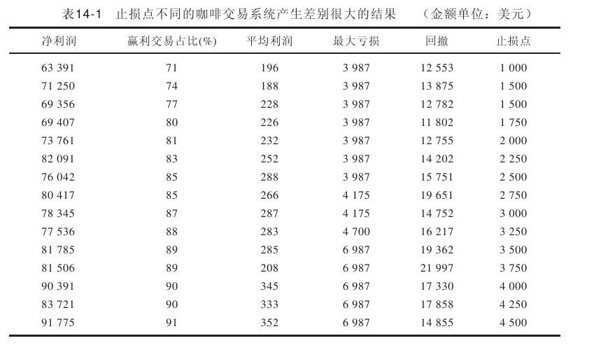
第二个秘密
这个秘密甚至更疯狂……设定目标改善不了一个好的系统，根本改善不了。
好吧，再读一遍我刚才对你说的话。趋势跟踪系统赚钱的秘诀是它能够抓住非常大的趋势波动。这些大赢利能偿清所有的小损失。
我们都知道“让利润滚动起来”这个法则，而当你试图设定目标（削减利润）时就会得到证实。这同样困扰着交易新手……一旦价格达到某个神奇数字（如甘氏线、循环窗、支撑/阻力等），他们想取得利润或退场。
20年来我的研究结果一直给出同样的答案……使用固定目标就会降低系统效率。我确信很少有订户（如果有的话）能够一直从我们推荐的赢利大交易中获利。
我们最近在货币上做了一笔漂亮的交易就是很好的例证。
你可能认为我们的热线电话根本打不进来，人们都在讨论他们的赢利。呵呵，不是这样子的。人们经常打电话进来询问“从哪里可以重新进入交易”。
14.32 赢家与输家的区别
1993年2月（第30卷第2期）
对20位赢利交易者和30位赔本交易者进行建模的结果。
在生活中，我们几乎每一件事都是通过研究优秀人士而学会做好的。通过观察一个叫鲁斯·鲍威尔的小孩，我学会了打橄榄球。通过观察保罗·哈伯，我学会了打手球。
用高科技行话说，这叫做建模：发现某个优秀人士，仔细观察他们每一个动作及信仰，揭露他们在其特定领域之所以优秀的原因，随后将那种优秀的特质铭记在心并身体力行。
托尼·罗宾斯目前是这项技术的主要倡导者，据我所知也可能是在人类建模上花费最多时间的人。托尼将建模定义为发现促使某人完成某项任务的内部表示及行为之顺序的过程。这种策略的组成成分包括信念、行为和语言。
信念系统是赢利期货交易者与赔本期货交易者之间区别的关键之处。首先，我谈件真实案例：在最近一次实验中，癌症患者接受了化学疗法，其中超过60%的患者出现了这种“疗法”的典型症状，如呕吐、恶心、落发及精力减退。
然而，上述患者服用的是一种惰性的安慰剂。
患者的信念造成他们的实际问题。我们也是如此。这是我知道的。过去两三年来我一直仔细记录着与期货赢家和输家进行的交谈，从心理层面了解他们的交易风格以及信念。你在有关书籍和杂志里读过了一些关于我以其建模的交易者的故事。部分赢家需要保密。多么大的发现呀！赢家与输家在期货交易方式上存在重大区别。
可能最有趣的发现是交易赢家和输家也存在重大的相似性。让我们首先来看看他们的相似之处吧。
14.32.1 他们之间的共通之处
赢家和输家都对交易着迷。这是他们的生活。无论赢家、输家，交易都是他们的最爱，而且他们都是极端主义者。我所知道的最大的输家交易时所具有的力量度与精力和任何一个赢家都不相上下。因此，将渴望和动机划去，他们不是造成差别的元素。
我发现的另一共同点是这两类人均很少有关系密切的同性朋友。男性交易者最多有一个强壮的男性朋友，女性交易者同样如此。无论赢家、输家，充满激情的商品期货交易者都不是社交达人。
我此前提及的极端主义者特征在两组交易者的生活中随处可见。两组人似乎具有极端的生活方式和信念。他们对世界的整体看法大多非黑即白，很少存在介于黑白之间的灰色区。我认为这正是给输家带来如此多麻烦的原因……他们全身心地致力于交易，但是既然他们从一开始做错事，因此他们的灾难相当大或者相当稳定。
14.32.2 他们的不同之处
首先，让我们谈谈输家，以下就是我发现他们所具有的共同点。
他们大多数人都抱有这样的想法：将1万美元变为100万美元，越快越好。他们的目标就是尽快发大财。他们所有人从建仓开始到退场后数日内，脑袋里总有声音与自己“喋喋不休”地讨论其交易。
所有输家都提到是焦虑推动他们进入交易。他们忍不住要做交易……坐在场外而没有建仓位对于这些人来说是无法忍受的。只要能参与交易，无论输赢，他们感觉比不参与交易更开心。交易带来的狂喜经血液流经全身，他们似乎对此种感觉欲罢不能。
其他两个共同点是交易决策和资金管理。输家很少关注资金管理。一位受访者居然对我说：“这个行业与资金管理无关，只和对错有关。”
我还发现他们当中很少有人愿意留意一下他们的资金净额即账户余额。他们很惊讶居然有人每天都留心这个问题，因为他们看不出这样做与建立赢利仓位有什么关系。
最后，他们全都问我是否有人真的靠这个（即期货交易）为生。他们似乎对此不太确信。他们不太相信利润可以持续不断获得……即使他们看到了很多基金经理提供的证据。
14.32.3 现在谈谈赢家的共同点
我从哪里谈起呢？令我吃惊的是，赢利交易者问我的问题与我问他们的问题一样多！输家很少提问题。没有一个赢家从事期权交易。他们全都有一套资金管理方法，而且都是技术交易者。无论男女交易者，他们均能详细叙述一次亏损巨大的交易，他们似乎已将这个交易铭记在心并且不愿意历史重演……永远不重演。因此，他们使用止损点。如果某些交易预计不会赢利，他们会“推掉”这些交易。因此，他们脑袋里没有“喋喋不休”的声音与自己讨论交易情况。
另一个明显区别是赢家将注意力聚焦在极少量的关键“最爱”市场上。有一个赢家自1956年起一直专做大豆市场的交易。输家似乎总是频繁地更换市场、导师或投资顾问公司。赢家对自己的特定市场做了大量研究或购买了相关研究报告，而输家似乎总是在寻找一个高人来解救他们或替他们赚钱。
所有赢家完全相信他们将挣到钱而且竭力规避坏事情。他们四周有保护性的氛围；他们在市场上不做蠢事。他们很惊讶更多人不能做好自己的工作；他们意识到工作中有很多压力，但相信任何有适当智力的人能够做好自己的工作。
要点重述
本章只有一个目的，即传递智慧。智慧胜过任何系统、数据、图表等，因为这些东西本身都是“哑的”。智慧给了我们正确使用手头工具的角度。我希望我在本章中传递了一些智慧。
第15章 到底是什么让股市上涨
图表不能左右市场，市场让图表变化。
我会回答这个问题。但是首先我要说，在任何时候，想要了解市场为什么会这样运行都是不可能的。跟我们生活和职业中的其他方面不同，市场日复一日地用不稳定的数据对付我们。
有人说星象学才是价格运动的真正原因。也许吧！上个星期，除了日元，交易所内所有的商品价格都是下跌的。为什么会是这样？从理性上讲，金子和债券同时下跌是不可能的，谷物和肉类期货也是一样。但它就这么发生了。我一次又一次看到过这种景象。
也有人说趋势或者速度阻力线是市场运动的成因。江恩的信徒们有他们自己的角度线、原点等；对他们这一套我第一个就不相信。但我还是一次又一次地看到市场就从这些电子绘图工具预测的应该触底的位置跌下去。
当然之后还有基本面因素。有时候利多消息会让市场上涨；然而同样地，市场也会在利好出台后下跌，而在利空出台后上涨。
一点儿也不奇怪，我在33年的交易生涯里从没见到谁能够一直正确地预测市场的走势。不变的是，最炙手可热的人物最终也会被冷落。如果说我们被市场抓住了，我不接受。这只是跟不稳定的数据打交道的方式。
但幸运的是，我们还是能靠交易挣钱的，毕竟一些指标、形态和技术还是可靠的，靠这些不总是能赚到钱，但会经常赚钱。
在这些指标里，准一些的是利率对股价的巨大影响，这一点不是什么新结论了。我在1969年出版的《选股秘诀》里面就讨论过。当时，我创建了动向指标，根据收益率来确定股票未来价格趋势（收益率受利率影响）。
当然，也有更容易的方式来观察这个问题，那就是对照标准普尔500指数来监测国债的价格。这么做不只更简单，而且要感谢计算机，我们能看到两个市场间存在的关系。
15.1 逻辑初级
我在俄勒冈大学碰上一位很棒的逻辑学教授，他叫阿尔伯瑞·卡斯特尔（Albury Castell），你们许多人上逻辑学与伦理学课程用的教材就是他写的。在我大学四年当中除了主修课以外，他讲授的课程是最鼓舞人心的。现在回头去看，还是觉得那是在我离开校园后对我的生活最有帮助的课程。
你有没有想过我们会教给孩子们多少，或者学习多少我们从来也不会用到的“东西”？我们学过的数学知识，90%的人只会用到其中的10%。上次你做圆周平方或者抱着一册名为《毕欧渥夫》（Beowolf）的史诗睡觉是什么时候？或者忘记了句法，在句尾用了介词是什么时间？我怀疑所有这些填鸭式的教学就是造成我们只会说不会做的原因，而且让我们深受那些严谨而且荒诞的理论所害，很容易被市场大师们误导。
15.2 这些话我可以用名誉担保
回到逻辑基础。逻辑学的基本定理之一就是你不能用A来预测A。然而我们这些市场分析人士日复一日都是用价格来预测价格的。哦，我们也能改头换面，说自己是用振荡指标或者移动均线、趋势线来预测价格。但事实是，我们在使用从价格上创建出来的工具来预测价格。卡斯特尔教授会让90%的技术分析师在这门课上不及格。
这儿有些东西真的不可思议……看看图15-1显示的数据，从标准普尔500指数交易中获利达141 792.50美元，交易中根本就没用标准普尔的价格进行分析！这些买入信号的生成方式是这样的：当数据A中的条件A发生时，那么只是在数据B（也就是标准普尔）中买入做多。考虑到每笔平均获利1 750美元，比平均亏损大2.2倍，浮亏金额不超过盈利的13%，我认为数据A对数据B有很高的预测性，得出这样的结论是安全的。
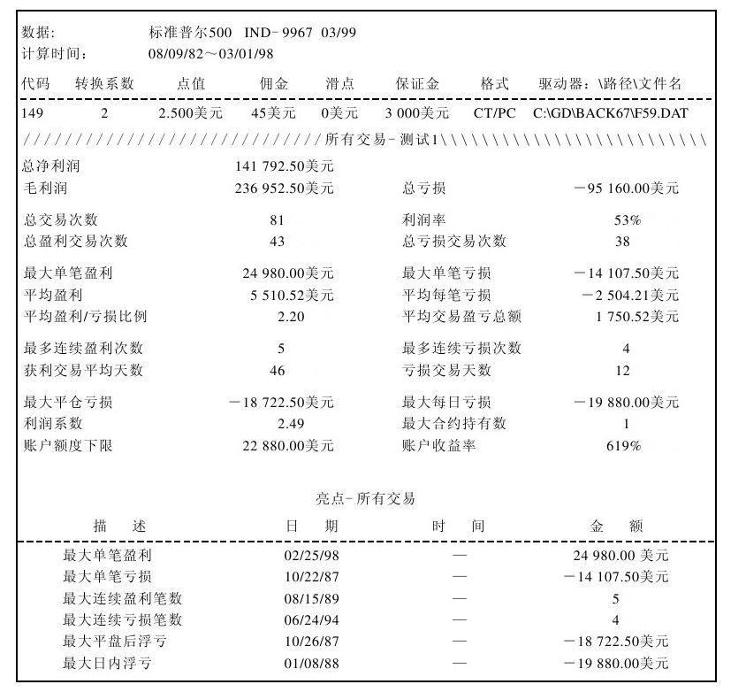
图 15-1 完全基于债券价格的标准普尔500指数买入信号
15.3 观察数据A和数据B
当债券市场当日收盘价高于14日内的最高价时，收盘时市价买入标准普尔500指数就取得了上面的测试结果。
交易离场的条件是这样的：或者是跟踪17日内债券最低价的止损退出，或者在距离入场点3 000美元的位置止损。
这样，当债券价格突破14日通道时买入标准普尔合约。当债券价格17日通道被向下突破或是头寸遭遇固定金额损失时就退出交易。还有更重要的一点，根据标准普尔价格通道的突破设计的交易系统是非常糟糕的。然而，债券价格通道的突破显然会强烈影响股票价格。
现在我们来看看真正刺激的东西。标准普尔14日价格通道的突破本身产生了灾难性的记录。实际上，这个市场几乎没有给交易者把握通道突破的机会。“最好的”突破参数在15～20日之间。即使是在交易可以获利、浮亏不是太大的条件下，利润还是主要出自一次大的获利交易。
另一方面，利用债券价格来生成标准普尔的入场点，通道突破的参数用什么问题倒不是太大。这些参数都可以挣钱，而且大多数还不错呢。
举个例子，在图15-2中，债券价格通道突破我用了14天周期生成入场点，然后用标准普尔价格最近12天的最低价作为离场的点位。我们用债券价格指导我们入场做多，用标准普尔价格保护我们的利润。
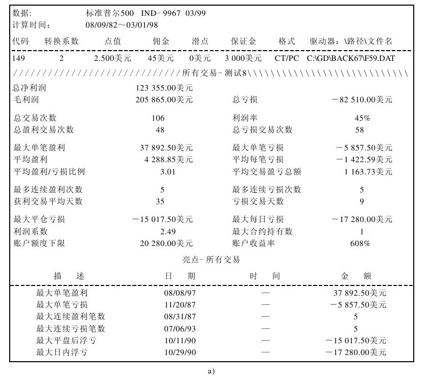
图 15-2 a）完全基于债券价格的标准普尔500指数买入信号以及卖出信号；b）基于债券买入标准普尔500并持有一两天
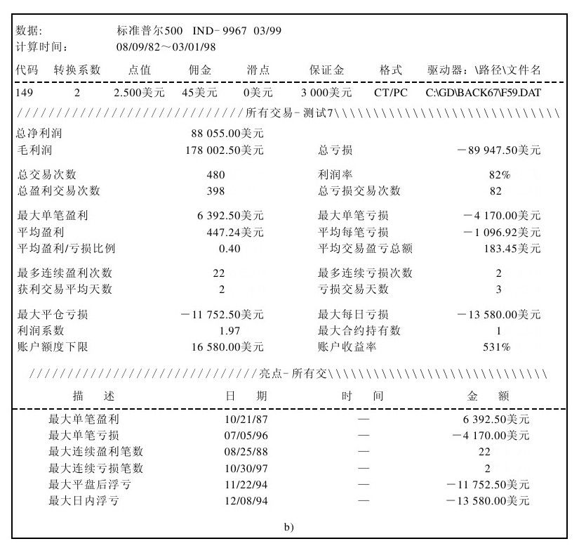
图 15-2 （续）
最后一点，参加过我的研讨会的人都知道，非常短周期的债券价格通道突破（结合我们熟悉的1/2拯救）所生成的交易信号都非常棒。去年，我曾经有过49笔中42笔交易获利的记录，平均单笔盈利527美元。图15-3就展示了这种技巧。尽管利润下降到88 055美元，但它高达82%的成功率一定会吸引你的。
15.4 让我们戒掉坏习惯
把商品期货交易者引上死路的有三件事：糟糕的交易系统、没有资金管理，还有就是坏习惯。
坏习惯——这可不是你家小孩儿爱听的摇滚乐队的名字（尽管乐队起这个名字肯定能有不错的唱片销量）。我所指的坏习惯到底是什么呢？分析一下可以划为两类。
第一类包括你熟悉的坏习惯。在西海岸，我们有时候会认为无精打采的态度是指每天晚上睡觉都不够早，以致第二天一早5：10起不来；而在东海岸，把事情都推到上班铃响才做就会被看做无精打采的。
更糟的是，我们在商品期货以外的世界里，在这个我们家人朋友生活的世界里，不能保持健康与平和。但那些坏习惯也是我们在生活里熟知的、无时无刻不在抗争的。
第二类就涉及真正的坏习惯。在交易中，我们会认为这些是正确的（或者好的习惯），然而事实远非如此。
这样根深蒂固的坏习惯成为我们的操作准则，变成了我们成功的基础。但是因为基础是有问题的，所以我们肯定不能获利。艾恩·兰德（Aynn Rand）说的对：永远要检查你的前提假设。
我在交易者中最常见到的坏习惯——无论交易者成功与否，就是无法对市场运动做出正确反应。除了我们强加在市场运动上的说法以外，市场运动本身就是一切……这是摩擦。如果你的解析覆盖了市场运动，那么你就不是在倾听而是试图告诉市场该怎么做。
最常见的方式，也是很糟糕的习惯，就是在价格强劲上涨时卖出。或是在看到强劲上扬的市场，比如说一个涨停板，你脑子里会有个声音对你说“等着价格回调，不要抓住这一波，它一定会回调的。”这么想一样糟。
简而言之，让你在价格创新高时买入，在价格创新低时卖出会把你吓得魂飞魄散。
15.5 怎么戒掉坏习惯
我只知道两种改掉坏习惯的方法。第一种方式是靠重复，一次次重复正确的行为，形成对正确行为的条件反射。
另一种就是要理性地认识到坏习惯是错误的，然后用正确的信息，用事实替换原来的“认知”。下面是市场真相的两方面。
15.5.1 真相1
[在市场高收时买入，在市场低收时卖出（涨跌停板预示着价格运动方向还会延续）。]
当然，我懂得无论从理性上还是在情感上，在涨停板买入，跌停板卖出都是很艰难的。但真相就是，只要这么做了就能挣很多钱，让我做给你看。我找到了系统交易公司问他们一个简单的问题：“如果今天的收盘价在全天价格波幅65%偏上的范围内，那么我在收盘价买入，持有5天、10天、15天或20天后退出，结果会怎么样？”测试结果可以从表15-1中看到。配合止损保护，这个策略非常有效。就像表格显示的，在任何市场里这条基本的策略都能赚钱。
更让人惊讶的是，一年前我在《期货》杂志上关于K线的文章中还曾经写到过，我根据“最强的”阳线组合进场，根据刚刚说过的方法，持有5～20天后离场。在测试中，没有哪种形态组合能够在所有市场中都有效。但是在这儿，一种简单的形态就能在所有市场都产生利润？天呀……在强得难以置信的行情下买入真是个好习惯。
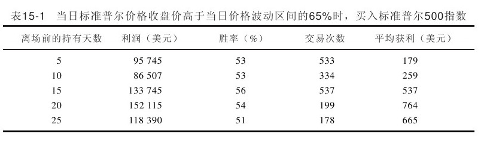
这听起来很怪。在我们的脑子里，我们希望在强势上涨的日子卖出，在疲软的日子里买入。你说对了，我们都喜欢便宜东西。但是做交易的时候贪便宜会让你破产。
如果说哪个好习惯能把我认识的那些专业投资者和普通投资大众区分开的话，那一定是专业投资者的强势买入的愿望。比尔·米汉很多年前开始纠正我在回调时买入的坏习惯。我敢保证，忘掉这个好习惯用不了这么久。在你的脑子里牢牢记住，强势是一种力量，市场保持趋势需要这样的力量。
要把这一点记得更牢一些，我补充一点，我所了解的“图表专家”买入信号中最棒的就是当价格穿过你图表顶部，你不得不增加坐标图纸的时候。那是终极的买入信号。
15.5.2 真相2
[价格创新高时买入，价格创新低时卖出。]
如果要我猜的话，那我猜比起其他交易者已知的交易技巧来，“创新高时买入，创新低时卖出”给交易者带来的利润肯定更多些；反过来也一样，在价格创新高时卖出，创新低时买入肯定会亏损更多（过去是，永远也是这样）。
通常当我们看到价格新高时，如果时间不长，我们会决定放过交易等待回调。那是错的，从下面的研究中我们可以看到那真的是错误的。这个研究中只是在价格突破X日内最高价时买入！投资大众和没有严格训练过的交易者都做不到。但是它，也就是电脑能够做到。
这条真理是电脑验证的。下面一组数据显示（见表15-2）当今日最高价低于最近X天的最高价，而且价格次日创下新高，让我们在新的X日高点位置买入做多。
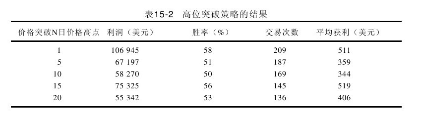
这次还是持有一段日子退出头寸，并且设置了3 500美元的止损。我们追随强势买入。创新高买入是个成功的策略。前面的例子还不是交易系统，而更像一个表例让你彻底了解让强势引导我们的重要性。大多数交易者都会被过度的强势所吓倒。所以他们非但不会买入，更糟的是他们还会卖出做空。
就像以前说过的，比赛或是竞技中，也许并不总是最大的、最快的、最强悍的人会赢。但是朋友，他们才是值得你下注的。
15.6 设置止损的建议：金钱损失和不可预期
这一行里只有两项是已知的：第一，你必须控制损失；第二，价格是高度不可预期的。开发交易系统的目标就是开发出一台终极赚钱机器，能像一口油井那样从中不断地抽出利润。尽管你也许永远也达不到这个目标，但是你还是能从系统开发中了解大量正确交易的方法。
15.6.1 止损的目的是什么
正确设置止损是我们从系统开发中学会的一个例子。我们出于一个原因，而且就只是这一个原因使用止损——当系统失效时保护我们。系统总会失效，如果这种潜在的倾向不存在的话，也就没必要使用止损了。止损是我们防御的盾牌，让我们不受来自系统和市场不可测的影响。
交易这个游戏中包含了太多的不可测运动，所以如果止损太近的话，它就会伤害你。实际上，你的止损点越近，市场就越会把你这些止损点抓住，你被止损出局的次数越多，也就越会变得疑神疑鬼。我认识的交易者里面，没人能分毫不差地预测到市场运动（由于价格的随机运动），因此我们的止损也就必须放在过去的、随机的价格波动区域以外。它们必须被放在足够远的位置，这样如果它们被触发了也是由于真正的市场运动，而不是被随机运动影响的。这是第一课。
15.6.2 现在回到现实
对于止损，还有一件事情也很重要：因为止损的目的是防止出现大的亏损，所以止损也要建立在资金管理的原则之上。举个例子，还是同样的标准普尔500指数的日交易系统，但是使用了三个不同的止损。
图15-3～图15-5分别使用了500美元、1 500美元和6 000美元的止损。我们来看看它们之间存在的巨大差异。记住这是同一个交易系统，唯一不同的就是我们愿意接受的风险大小，这取决于止损的位置。
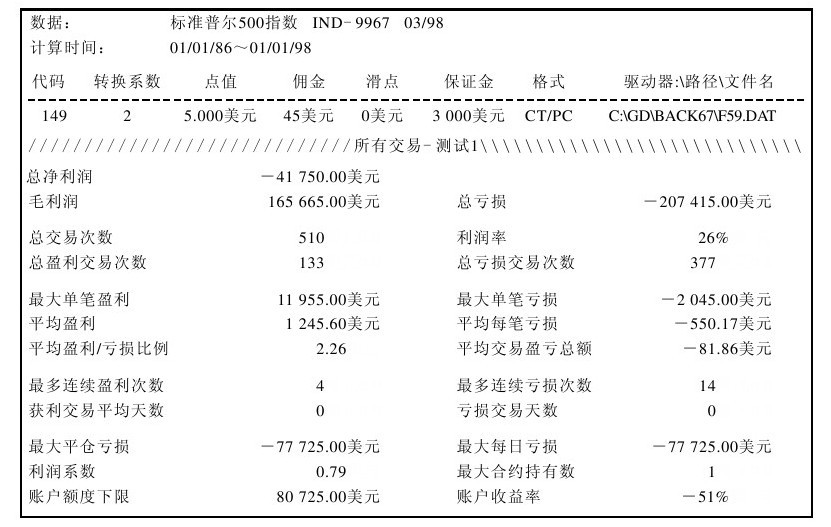
图 15-3 标准普尔交易系统，500美元止损
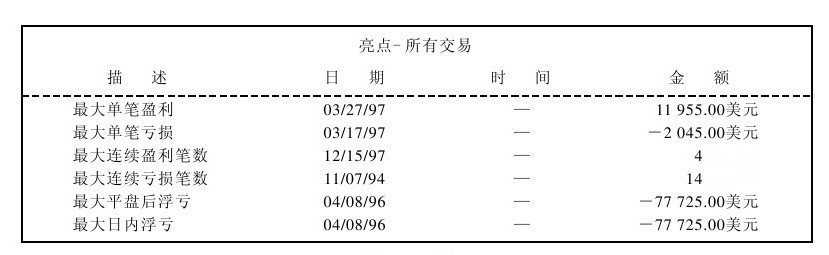
图 15-3 （续）
使用500美元的止损，系统实际上是亏损的，准确地说是41 750美元的亏损。510笔交易准确率只有26%说明这不是一个好的交易系统。
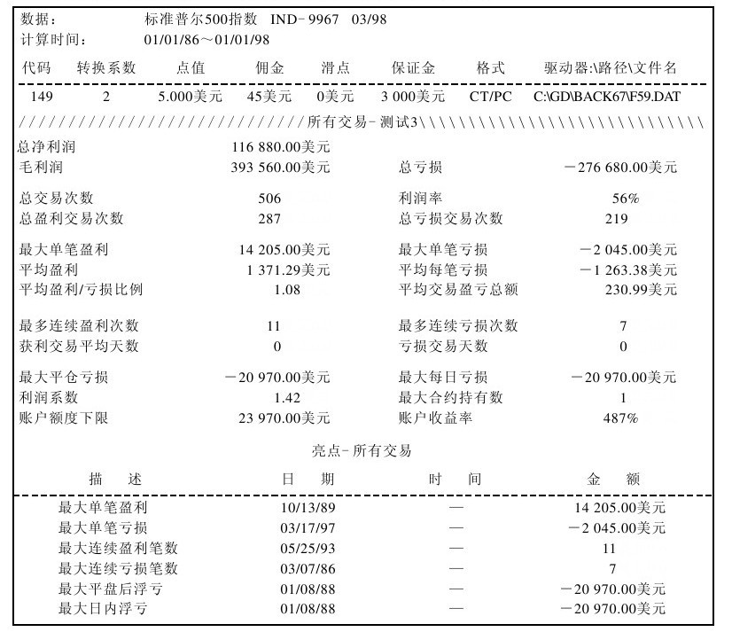
图 15-4 标准普尔交易系统，1500美元止损
这还是它吗？看看图15-4，还是同一个系统，同样的买卖入市规则，但是使用的是1 500美元的止损。这带来了多大的不同！准确率飚升到了56%，我们把一个赔钱的系统变成了赚钱的系统，从亏损41 750美元到盈利116 880美元，改变了将近160 000美元。天啊，伙计们，到底有没有止损的方法？
下一个系统测试使用的是6 000美元的止损。这会改进系统表现吗？你看，可以说是，也可说没有。它能让系统赚更多的钱，净利润达到269 525美元，准确率升到了70%。但我们也为此付出了代价。注意图15-5中最大单笔亏损从使用1 500美元止损时的2 045美元跳升到5 920美元。更糟的是，平均亏损从使用1 500美元止损时的1 263美元上升到1 661美元。风险金额增加的同时，随着止损点的后撤，每笔平均盈利仅仅从1 500美元止损时的1 371美元提高到了1 470美元。
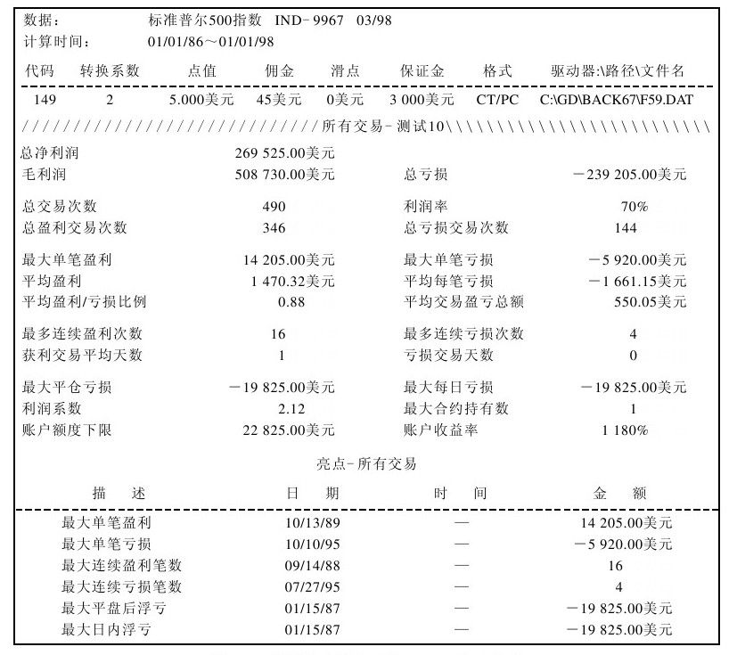
图 15-5 标准普尔交易系统，6000美元止损
问题是当你标榜自己使用更大的止损金额时，你的账单会出现太大的账面损失，仅一次交易就亏损6 045美元。这是最致命的问题。如果你有100 000美元的账户，每笔交易的亏损不想超过5%的话，若使用6 000美元止损，你的持仓不能够超过一张合约，若使用1 500美元的止损策略，你可以交易两张合约来有效放大你在账户中的利润。这听起来可能没什么，但你在使用我的资金管理模式时，效果真的会非常不同。
我希望你能学到的教训就是，使用固定金额止损远比用跳神一样的技术分析要有效得多。
15.7 概述我是如何进行交易的
好了，我已经讲了市场上有关短线交易的很多技巧。所有的这些交易技巧早晚会派上用场，然而，只有把它们用在最恰当的地方，才能发挥出最好的效果。
为此，在这个版本中，我添加了简单的概述，描述在实践中我是如何进行交易的。以下就是我进行交易的具体细节。
现在要向你们展示股票操作市场上最强大的指标之一——交易商持仓报告指标。我的很多学生只用这一个指标进行交易。它代表了众多大户投资的数万亿美元。这些大户是市场的推动者，他们知道的比我们多。
以下就是如何跟随他们……
美国政府每周末发布一次从上周三开始到本周二结束的为期一周的交易数据，即交易商持仓报告（COT），它显示了市场上的各类“玩家”在这一周所做的全部买卖。交易商基本上可以分为三组，他们是商业交易商、大投机商以及小投机商。
在20世纪70年代，还没有人意识到这个报告的时候，我就开始跟随着这些交易商进行交易了。我想我可以如实地说，在研究他们的动向这一点上没有人比我有更多的经验。我的一些学生已经基于这些数据开始了他们的职业生涯，他们干得非常好。我一直觉得寻找任何资料时最好要追根溯源。在这里，我就是“源”，你们已经找到了“源”，这不仅是因为我有40年处理数据的工作经验，还因为我在工作中发明了使用持仓报告的最新方法。
明白三组不同类型的交易商或投资者至关重要。首先，让我们从第一组小投机商开始。这一组中的大部分人是跟你一样的，伺机低买高卖，并期望实际的市场交易中快速地挣到一些钱。但总体来讲，这一组人是在市场低点卖出，并在市场高点买入，换句话说，他们大部分时间是做错误的事。
第二组，大投机商。多年来，大投机商已经发生了变化。以前大投机商是指像我这样进行大批量交易的人。而现在，大投机商多指各种商品基金。过去是没有商品基金的，而现在，正是他们构成了这个市场上最大的参与群体，交易额数以亿计。他们是市场趋势的主要追随者。很难利用从这个组中得到的信息预测市场走势，这是因为他们的交易方式逐级买高或逐级卖低。
最后一组，商业交易商。他们代表着各行业正在做什么，是商品的生产者或使用者。一个很好的例子是有人种植大豆，这是生产者，同样的有人开采金矿。与生产者相对的还有使用者，例如有人把大豆加工成各种产品，或有人购买实物交割的黄金并将它们加工成珠宝或计算机芯片。换句话说，这个群体代表着实业。他们最会理财，不是市场趋势的追随者，也不是市场上的投机者，不会试图抄底或摸顶。
他们利用市场更好地开展他们的业务，当然，他们进行对冲操作……他们是市场上的套期保值者，对此，我的课程中还有更详细的解释。现在，就让我们看看他们过去的记录。
图15-6显示了黄金的日线图。从上部的窗格，你会看到每天黄金价格的波动。从底部的窗格，你会看到商业交易商的净多头头寸变化趋势。这条线上升表示商业交易商正在买入，这条线下降表示商业交易商正在卖出。此外，还能从这条线中看出大投机商，总持仓由黑线来表示。
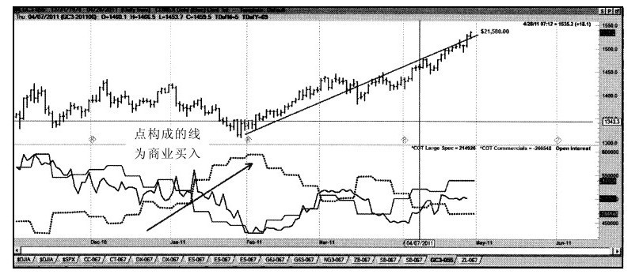
图 15-6 黄金与商业买入
非常明显，在2011年2月上旬，商业交易商是黄金市场上的大客户；一周又一周，他们增加了多头头寸。这是潜在反弹的开始，带动了差不多每合约22 000美元的交易量。正如你可以看到的，商业交易商推动着黄金价格，它与图表形态、波动、占星术或市场的某些神秘策略无关。
市场波动是有条件的：当多数人在买入时，价格通常上升；当多数人在卖出时，价格通常下降。就这么简单。
为了让人们更容易地理解商业交易商的操作，我发明了自己的指标，可称之为“威廉斯指标”，小投机商、大投机商和商业交易商都可以使用这些指标。它们对我的工作来说是独一无二的，并且没有人能像我一样熟练地应用它们。我给你们看另一个市场的例子，用这个指标来分析与之相对的商业净头寸。
图15-7是大豆的周线图。规则真的很简单。当指标上升，高于75%时，如果市场是处于上升趋势，我们希望在市场中寻找买入信号；当指标下降，低于25%时，如果市场处于下跌趋势，我们希望在市场中寻找卖出信号。
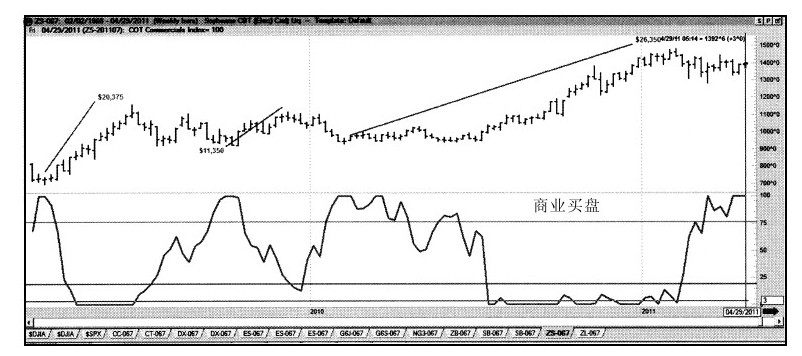
图 15-7 大豆与商业买入
这不是太困难吧？你们可以看到由我的COT指标引发的反弹震荡。一些带来了可观的获利，虽然其他的只获利1万美元左右。但问题的关键是，多亏了这个指标，我们可以看到商业交易商正在做什么……他们在驱动着市场的走势。
现在你们知道我对技术分析师所谈论的各种花招并不热衷的原因了吧，那些图形中的楔、头、肩和所有指标只表示过去的价格走势，它们并不表示价格的未来趋势，因为它们不是影响市场的基本因素。
是时候来个突击测验了！
我将给你们一个没接触过的市场波动表，图中不显示市场价格（见图15-8），我只打算告诉你们COT指标。我要你们做的是，充当这个市场中的买主，决定何时应该做出购买或售出行为。你们应该寻找的是，该指标高于75%的部分，在这些时候，你们应该找到买入信号，对吗？你们已经学会了，是吧？
好吧，来看一下图15-8，不管这是个什么市场，假设你是这个市场中的一名买主，你如何作决定？
图15-8是一个咖啡周线图。你们看不到价格，没有线索知道究竟市场发生了什么。但是，你们可以通过我的COT指标来判定什么时候是咖啡的买入区，即在顶线以上的区域。同样的，当价格下降到底线以下市场呈下跌趋势时，便发出卖出信号。
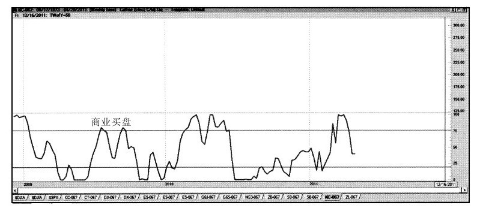
图 15-8 只是商业买入，由你决定买入时机
图15-9拉回了原来的画面，因此你们可以同时看到价格和指标。你是怎么做的呢？你能够确定价格上涨或下跌的时间吗？
怎么样？在不知道是什么商品也不清楚该商品的有关情况时，你们已经能够正确识别出咖啡市场上有重大意义的上涨点或下跌点了吧。这并不是一个特殊的或人为挑选的例子。一旦你学会了如何使用我的指标，你就会在很多类似的情况下见识到这一指标的巨大力量。
我想总结两点：首先，我的COT指标不同于其他任何人的指标。我不仅仅研究这些指标，还告诉我的学生们如何结合未平仓合约看待市场中这三组交易商之间的相互关系。当人们领会到这三组交易商之间实际上是彼此互动的，这会让他们感到豁然开朗，知道市场什么时候将会上涨或下跌是非常有用的。
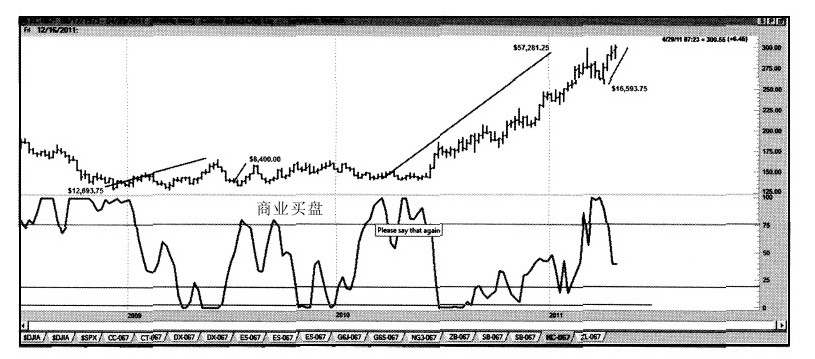
图 15-9 价格与商业买盘
其次，我希望到现在为止，你明白了“一些因素造成了股市的上涨”这个道理。这些因素并不复杂，是可以学会的，就像数分钟前你们刚学到的课程一样。如果你想成为一名优秀的交易者，你需要了解市场，研究市场，这正是我开设这个课程的目的。如果你还不了解这些，可以点击这里，看看这个课程涵盖的内容。我做这一行已经近50年了……我的课程将会把你从多年的期待、疑惑和徘徊中解救出来。
15.8 我的交易策略……它是如何起作用的
如果没有制定书面的交易策略，你总是会追着自己的尾巴，重复转圈……90%的交易商都是如此。你迷路了，因为你没有计划。我的学生不这样做，因为我们有一个绝对的战略。这便是……
我的课程非常简单，但相当重要。当我遇见那些交易商并询问他们的交易策略时，他们通常一无所知。他们告诉我，他们的策略就是低买高卖。但是他们并没有具体的方法或战略途径去实现他们的交易策略。他们只是指望，无需在更广泛的基础上理解市场时就可以进行交易了……简而言之，他们盲目地进行交易，然后开始祈祷。
我的交易策略可以解释为三个步骤：（1）首先，寻找一组市场；（2）伺机进入那个市场；（3）伺机退出。其中退出点可能是：（1）止损点；（2）跟踪止损点；（3）达到目标价格。请考虑把这作为你交易的策略吧，我已经定义了各个参数。
15.8.1 寻找市场
第一步是要找到一组在我们看来可以大幅上涨或下跌的市场。你们已经学了如何使用COT报告寻找这样的机会。COT报告中的指标可能具有很大的价值……它们使我们把注意力集中在少数有很高成功概率的市场上。
15.8.2 进入市场
当然，仅仅找到目标市场是不够的，我们需要知道，什么时候进入市场。在我们的课程中，我使用五种不同的进入技巧，因为市场的顶部和底部不总是以同样的方式出现。
大多数交易者的问题是，他们是只有一个简单招数的“小马”。他们有且只有一种进入技巧。实际市场中冲顶和触底（趋势相反）的方式是多种多样的，也因此我要教你们不止一种的进入策略。如果市场每次都以同样的方式冲顶和触底，交易将会变得非常简单。每一次的冲顶或触底之间确实有一些共性，但他们并不都是相同的，所以我们需要准备几种方法抓住拐点。
15.8.3 退出市场
一旦交易开始，游戏和乐趣也随之开始了。交易的结果无非有两种：亏损或获利。这听起来简单，但相信我，事实并非如此。我会告诉你我的一个退出技术。现在，就让我们来思考退出市场的策略和方法吧！
首先，一旦开始了交易，我就设置一个止损点来限制损失。比方说，我在买入，那么我的止损就设在低于市场的某个位置，不会太远……我不希望自己产生巨大的损失，但止损点也不能设置的太小，那样市场的随机震荡很可能触及这个止损点，导致你被迫卖出。我觉得应该在一个精确的点上退出，这是在我们的课程中我要教你的另一个技巧。
通过设置保护性的止损点，我保护了我的损失，我只能亏损这么多。当市场开始反弹，复杂性也随之而来，我在想……我应该在哪里退出呢？
我的另一个策略是设置略低于市场的跟踪止损点，让市场向前跑，希望它跑得远一点。正如你已经学到的，我希望通过着眼于小处去捕捉大动向。捕捉大动向最好的办法就是给市场足够的空间进行反复的交易。这里我所需要的是当市场跑得太远，它能告诉我信息，这时我最好出局：趋势可能已经结束，我应该获利了。
我的最后一个退出技巧是在预先设定的目标点退出。我并不像其他人那样设定目标：大部分交易商只是按每天的交易价格范围的一定比例来设置目标或参照斐波纳契数列。这些都是我研究过的东西，但我没有发现它们有太大的价值。我用我的“获利目标”来获利。这是我自1966年以来一直使用的一个工具。它有一个很好的纪录让我在非常接近市场高点和低点时退出。虽然它并不完美，但它出色地让我在市场扭转之前卖出。获利目标是根据近期的价格波动暗示的价格走势确定的，我在设定的获利目标点退出市场。
图15-10是我们根据2011年4月Larry TV的日线图（参见Ireallytrade.com）制作的一个非常清楚的例子。商业投资商的买入使得这个市场开始反弹。虽然进入市场时使用了不同的技术，但你还可以参照跟踪止损点。跟踪止损点围绕每日价格运动，当它被日线穿越时，就发出了买入信号。跟踪止损点设在前天最低价的下面，然后开始慢慢上移。你看到的这条线正是我的跟踪止损点。
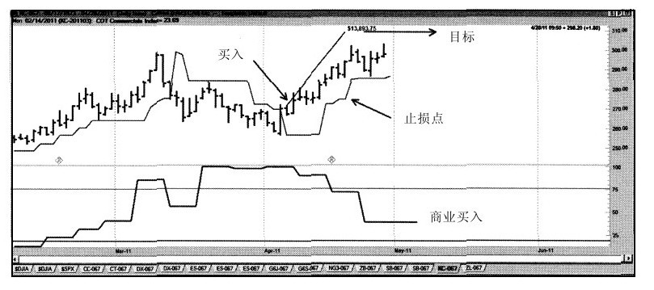
图 15-10 实际的交易设置
同时要注意到，获利目标是如果我们在价格还没有跌破跟踪止损点之前退出时可以获取利润的地方。
你应该注意的是，我们有自己的进入点、保护性止损点、跟踪止损点和获利目标。所有这些技术都是机械的……你们可以从图上看出这些技巧。虽然没有标明各个点的位置，但拉里·威廉斯的任何两个学生都将得到相同的价格点。
因此，这里是我的策略：先找到一个合适的市场，然后开始寻找它的变化趋势，在哪个点进入市场。设置止损点来保护我的损失，设置位于市场下方的跟踪止损点，同时期望价格达到我设置的获利目标。我也可以使用本书中讨论的其它进入技巧，比如，当天的“哎呀”点，等等。
要点重述
本章的重点是要向你展示我是如何做交易的……我做交易的每个步骤……非常清晰，设置止损点、跟踪止损点、获利目标，我知道什么时候进入市场，什么时候退出市场。虽然我可能是错误的（这种情况确实发生过），但我清楚地知道自己在做什么……我从来不盲目地交易。我的学生都不会盲目地交易。
你也不应该盲目地交易。
第16章 结语
通过看图表来挣钱的这门生意是不容易的。由于太多的所谓市场交易系统的在线交易商使它看起来更容易，所以近几年这种挣钱的方式变得更复杂。唯一容易的赚钱方法就是销售它们的系统。所有关于短线交易、当日交易等的文章都在误导散户，让他们认为这种交易方式是一种既容易又简单的挣钱方法。
事实不是这样的。
这门生意要求精神高度地集中，有时候是不可能连续不断的长时间保持这样的集中度。它还要求理智地去理解这个市场是如何运行的。我希望我已经在本书中向你们展示了一部分关于市场如何运行的知识。这显然是一个智力游戏。
在体育竞赛里，通常是最大个的、最坚韧的、最强壮的人赢得胜利。在股票交易中，获得胜利的往往是那个掌握最多信息的人，很有可能他也是最聪明的。但是，除了拥有智慧外，也要求拥有可以控制情绪的能力，不要过度地对市场影响作出反应。我看过很多非常聪明、非常机智的受过极好教育的人失去了他们买卖的所有钱。机智和教育是远远不够的，成为一个伟大的交易者还需要另一个因素。
这个挑战不仅是在智力上，还涉及情绪上的，其中之一就是你必须控制你自己。即使我们知道是错的，我们的情绪仍会导致我们做错事。情绪会让我们超买或超卖，过于频繁地交易或者一点儿也不进行交易。直到你能够管理你的情绪，不让它来掌控你，否则你交易的成功案例就会是有限的。
正如我所说的，这不是门容易的生意。我们受制于不断的变化中，且不仅在我们所交易的事物上。（当猪腩合约被中止交易的那一天，是我生命中伤心的一天。它们是我过去最喜欢交易的东西之一……我的爱好。现在，它们一扫而过。）所有的变化被镀上了这门生意和政治的背景。无论什么时候，只要金钱或权力处在紧要关头，你都会发现那些腐败的人在玩着这个游戏。在我们的金融世界中，我们几乎对权力和金钱都时刻准备着。你可以去想象会被这门生意吸引的那类人。你需要对在这场游戏里的其他参与者时刻保持警惕。通常来说，他们中的大部分人是诚实和正派的。但是只要其中一个出了问题，你的如意算盘就会被打破。
对我来说，最令人沮丧的事情发生在2011～2012年。我们看到的那些看似聪明的腐败政治议题正在全世界运作。谁不能意识到一个强劲、稳定的经济基础是坚挺稳固的货币呢？傻瓜所不能看到的是赤字开支将导致市场的不稳定以及对富人与穷人征收一样的高税费。对双方来说，哪些是最坏的事呢？
然而，这些想法继续存在着。当我们只是增加赤字开支，为什么还要消减预算呢？让我们提高税额，那我们能想出更多的手段来得到更多人的投票。这在全世界是一个糟糕的情势。
这就是这样的。在不考虑后果的情况下通过更多的手段去购买选票影响了你个人的重选。但愿，他们能够觉醒去纠正他们的错误。但是直到现在，这个市场当然还在政治动荡的旋涡中起舞，我想就这一切提供一些长远的观点。不管是新闻还是政治事件，这个市场大致上将会按它所应该的继续发展下去。
基于我在市场周期方面的研究，举个例子来说，我的观点是2015年将会是个强劲的牛市。我期待在那年进行买卖。不管是否有这些政治力量的存在，2015年的牛市将会出现。然而在那个时期的政治环境会让牛市加剧或放大。
那些同类型的周期性的研究报告让我相信在2017年中期我们将会在股票市场看到显著的下跌。下跌的幅度会被那个时期的经济和政治环境所加剧或减弱。
这就是我们为什么不仅要知道我们身边正在发生些什么事情，而且要了解长期的经济活动周期形势。
自2008年股市崩盘和经济的委靡不振开始，很多投资者和市场预测者认为伟大的美国，甚至这个世界可能都在成为过去了。
这是大错特错的。美国甚至世界的未来仍然在我们的前方。在2011年持续的经济大辩论是过去几年的经济衰败会改变接下去几十年的经济蓝图吗？又或者这仅仅是在长期向上走势中一个短暂的低迷？
两者都不是。
它其实是在提醒我们市场和经济体一直都存在，也一直都会面临剧烈的上升或剧烈的下降。是否未来还会再发生类似的事件呢？毫无疑问，这是一定会的。如果说我们能从过去学到些什么，那就是在未来仍会遭遇经济上的大变动。
当然，过去同样的研究分析只能让我们相信经济的增长会发生的，财富还是可以去创造的。事情会越来越好，直到经济疯狂的增长后又随之而来的崩盘，因为市场在需求一个平衡。
我的周期性研究报告认为世界经济和市场到2014年时已经消化掉这些问题，我们将会回到一个更稳定的经济环境中去。
只有一个卡珊德拉一样的悲观主义者才有可能认为经济不会再增长，我们也不会再有好的未来。其实是有的。
尽管过去几年里的经济并不是阳光普照，但是太阳会升起的，它将再次升起。没错，我们是在经历一个世界经济的重建以及一个全新的政权结构。那又怎样呢？这个世界会一直如此吗？
我这样说好了，事情不会比15年前更糟糕。15年前的事情好过更早之前的15年。经济或是改革……事情只会更好。
过于乐观的预言家会认为我们现在所经历的不过是个转折点。我倒有个更好的观点：这是经济学上的一门课，同时也提醒我们这样的事件还会再发生，虽然不会在近期，但是会的。我们不要忘记了，对于任何一届政府或是任何一家像联邦储备系统一样的银行寡头来说，他们都不可能去战胜这种长期存在的周期性波动。我们虽然不知道为什么这些波动远超出了我们的预期，但能够确定的是周期性的波动是任何人都不能够去控制的，所以它在未来还会发生。这就如未来还是光明的一样确定。
千万不要做空美国，也不要做空你自己。
我在这本书中已经和你们分享了我人生中的很多东西，还有几乎我所知道的市场。这本书是我进行交易的信条，但它不应该是你们的。你们需要去实行那些对你们有用的。你们要自己去应用它，然后想出更好的看法和新的方法。但是我在这本书里提到的基本原则是合理的、可行的交易资料。这一章包含了如何使用我提供的资料或其他一些东西的说明。
简言之，生意不是非此即彼的。
“但你说……”
“63页说到……”
“这条线穿过了那条……”
“11月的交易日，我是不是应该……？”
上述的这些都是我从这本书的读者那里听到的典型问题，这也说明了成为一名成功交易者的一个重要因素。
16.1 这就像生活一样
不光是生意，生活同样也不是非此即彼的。（我想）我们都知道，作为一个交易者我们都那么渴望绝对，渴望得绝对忘记了思考。就拿数学来说，数学是绝对的，但当我们把它应用到股票和商品期货的不完美世界里，这种工具反倒只能给这个不完美的世界多些清晰和明确。千万别忘了，投机毕竟是一种思考的行当。如果你不善于思考，或者至少是不善于找到正确答案的话，我建议你还是找个退身的台阶吧。
这个问题出现的根本就在于一厢情愿地想找到一些全自动的（系统的）交易方式。而所谓的专家或者像我一样的作者向大众兜售的、最多的两类信息，不是极端的、持久的熊市情结，就是相信某处存在着一种绝对完美的系统，能够把握精确的市场韵律、秩序和结构。这是投机中的两大神话。
是的，股市和经济都有不景气的时候，但是有一大群投资通讯作者却故意迎合大众对那些厄运来临的恐慌，比如另一次1929年的大崩盘……明天就可能发生，而他们却借此大发横财，过着舒适的生活。我认识这些家伙，和他们出席过同一场专题研讨会，目睹他们从1962年开始就一直看跌市场。这些“悲观论者”当中的一位私下告诉我，那些对未来恐惧的投资者是个巨大的市场，他们真的相信世界末日马上就要降临了，而这位“悲观论者”的商机就是去煽风点火。他补充说：“把通讯卖给这些人是比较容易的，他们是很容易锁定的客人。如果我选股出了错，没关系，业绩表现不重要，重要的是不断强调他们想要听的东西。”
这群人里尽是一些夸夸其谈、过度分析每件事的家伙，他们得出结论：美国以及全世界的未来都不乐观。然而，就算是对历史只有些粗浅研究的人都会了解一个重要的事实，我们的生活条件还有机会不断地改善。当然，也有低落的时候，但比起高涨的时候就显得微不足道了。
这里还有另外一群人，就是所谓的“环宇交易者”，他们相信每个市场的高点低点都有原因，每个价格的上下跳动也是完全可以解释的。但通常要先付一大笔钱给他们才行！我年轻的时候，对市场的运作一无所知，也不认识同行，因而对这类人的调子很痴迷。毕竟这帮人总有一大串成功交易的纪录，也能把过去市场发生的所有变化都说得头头是道。
通常，这一信仰的基础都是建立在W.D.江恩（W.D.Gann）的个人传奇之上，我就写过一些关于这位“奇人”的文章，他不过是在一堆出色的作秀中加入了几笔赚钱的交易，是个爱吹牛而且公关积极的人物。还有，这不是我的观点，而是老江恩的助手F.B.撒切尔（F.B.Thatcher）告诉我的。
我在股市上跟这些人待得越久，见到的赔钱的交易也就越多。尽管他们的过去是辉煌的，但是他们对未来的预测中，20次却只有1次是对的，这一次自然也就是他们在所有广告中都谈到（吹嘘）的那一笔。真实情况并不像他们说的那样；但是他们曾犯下致命错误的事实并不能阻止或者抑制他们再次企图预测未来。准确率、盈利跟他们的生活都是靠不上边的，他们要的就是“证明”他们烦琐的分析是正确的。我也曾经和这些人同台巡回演讲，除了其中几位，我对他们大多数都感到不齿。
在成千上万运用全息逻辑的交易者中，我只见过两位出色的人物，阿切·克劳福特（Arch Crawford）和杰瑞·菲佛斯（Jerry Favors）。此外，阿切和杰瑞不但是绝顶聪明的人，而且都是使用了多种技术、训练有素、经验丰富的交易者。
这种“一切均可知”理论的根本问题就在于它会让你抛却恐惧，把你的信心和金钱都押在这个理论上，而不是关注于市场发生的实际变化。如果你关心的焦点就是市场，是现在所发生的状况，而不是认定股票或商品的价格一定出现什么情况的话，你的成功机会一定会飙升：
[完美的系统或方法根本不存在。过去不曾有，将来也不会出现。]
如果在这个行当里存在过这样一个完美的系统的话，那么意味着：（1）市场中不含有随机变数的输入；（2）肯定早就有人发现了这个神奇的答案，现在已经拥有了大半个自由世界。因为我们知道市场总会受到变化无常的新闻事件、天气以及交易者观点的影响，因而就会有高度的随机性。而且就算是最棒的交易者和基金也会被敲出局，我们必须认识到市场是不能用百分之百的机械方式交易的。世界是变化的。
这句话从一个花了毕生时间开发系统交易方法的人口中说出来，是不是听起来很奇怪？也许是，但是不要断章取义，这并不是说我全部的工作、系统以及相关的努力都是没用的：
[生活就是一种主观的判断，但这种判断建立在拥有可以改善生活的信息以及系统基础之上。交易也一样。我需要一种系统化的方法帮我决定买卖，我需要确定的止损点，而且我肯定我需要精确的进场规则。]
但是我首先需要判断什么时候运用这些“东西”。让我们看看生活中的例子。
如果你正开车沿着公路行驶，一辆卡车紧贴着你超过去，并到你的车道里来，你会留在你的车道里呢？还是会转向开到旁边的空车道上去？交通规则很清楚，你不能把车开到别的车道里。系统告诉你，别这么做。但现实是那辆18轮的大卡车正在朝你的车道冲过来。我们是完全地遵守安全驾驶的规定呢，还是根据眼前的情况随机应变呢？能否逃生取决于应变能力。
不管在马路上，还是在市场里，都是现实说了算。
[生命的第一条规则就是生存；第二条规则就是只要让第一条成立，其他规则都可以不理。]
投机中也可以沿用生活中的规则，它们是完全一样的。成功的交易是一门艺术，在正确的时机运用知识。这意味着当你检查大卡车的时候，就该使用系统和规则。这才能叫做思考。我们的确需要生活的系统、交易的系统，但没有必要每次都严格地服从这些规则。原因是系统方法不会自动调整适应现实情况的新变化。这也就是头脑的作用所在，观察、记录、关注变化，然后形成一套系统的最佳的使用方式。
如果你在交易时不知道该怎么做，你必须遵守规则保住性命。如果你喜欢市场的情形，而且市场条件也符合你的规则限定，那就大胆去做；如果规则不满足条件或者条件不满足规则，放过这次。你没必要每天交易。拥有系统和规则的目的是让你在最有利时运用它们，而不是让它们控制你。
16.2 或许你并不适合做这行……
不是每个人都能成为医生、面包师或交易者。你真的适合这行吗？让我们来找出答案……
我的目标是创造制胜的交易者。近年来我可能已经是在这方面做得最多的人。世界上几乎每一个国家都有我们的学生。因此，除非你有很好的机会可以成功地做到这一点，不然我们不希望，真的不希望，任何一个学生，包括你，为了成为学生而成为学生。
这意味着该是你和我促膝谈心的时候了。我们需要知道，你是否真的适合这一行……如果你不适合，你应该做的是尽快逃离这一行，因为它不会让你有好结果。否则，对我不好，也对你不利，还对你的家庭无益。这些与我而言，比你付点钱成为我的一个学生重要得多。
让我来告诉你吧，我认为成为一个优秀的交易者需要具有某种性格……然后你可以判断自己是否适合做一个交易者。
我觉得我在那些非常成功的交易者身上看到的最重要东西是，他们能够接受一个观念，那就是“市场是不完美的，且作为交易商，我们不可能永远正确或一直犯错”。我们永远不会嫌获利的交易多，也同样做过许多亏损的交易。这样的事永无止境：“我们本可以在更好的点买入”或“我们本可以在更好的点退出”。因此这行不适合“必须追求正确”的人。
如果追求完美对你很重要，那么你需要做的是找到并点击删除按钮。现在就做。这不是一个完美的行业。我们可以在交易时用数学来帮助我们做出判断，虽然数学是完美的，但你无法通过运用数学来使不完美的东西，比如市场，变得完美。这一行中会有许多不合理的事情发生，其中消息的冲击可能是最大的。
这一行需要的主要有两部分：首先是知识……你必须要学习和研究交易中是什么在起作用；其次是情绪，因为我明白做这一行并不像吃奶油饼干那样简单轻松。当我看到市场动向非我所愿时，我会感到很难过，当我卖出过早或过晚时，我也会很沮丧，甚至经常冲自己发火。因此，要想成功地做这行，你必须有能力处理或调节自己的情绪。
我的儿子贾森·威廉斯博士是一名曾先后在约翰霍普金斯大学和华盛顿大学接受过正规教育的精神病医生。最近，他开始在约翰霍普金斯大学启动的一项测试中研究那些成功的商品交易者的心理，其中有几点在我看来是非常重要的，将有助于你判断自己是否适合从事这个行业。
这些心理中似乎有两个关键要素。一是保持专注力，做需要做的事。你能从头到尾地做完一项任务吗？你可以心无旁骛地处理所有细节吗？如果你对这些问题都回答“是的”，你或许可以在市场上进行日常的交易。
除非……
除非你太情绪化或过于神经质。你的情绪忽冷忽热吗？你的心情会四处碰壁吗？有没有人告诉你，你经常勃然大怒或情绪跌宕起伏？如果你是这样的人……或者如果你正在服用某些治疗抑郁症或焦虑症的药物……我认为你不应该成为一名交易者。
一名优秀的交易者并不一定是世界上最细致的人，但他需要具有处理细节的能力。此外，一名优秀的交易者还需要有能力控制自己的情绪。如果你的情绪会影响到你的交易，这必定是一个灾难。
最后一点是，我认为你必须彻底享受你要做的事——如果你能充分地享受交易的过程，那么你应该成为一名交易者。你是否幻想着在看完一本书后就可以用1万美元赚得100万美元了？如果是，那么你不应该成为一名交易者。交易不是一件简单的事：赚钱的感觉是美好的，但交易也有亏损的时候。[世界上所有赚钱的事都不值得你把自己搞得神经衰弱。]
我钟爱这项事业的原因是，我们赚钱的机会是无限的。我的父亲一辈子都在一家炼油厂里工作，即便他知道自己的收入是有上限的。我永远不会知道他是怎样做到这一点的。当我完全明白他的经历之后，对他无比钦佩。但作为一个交易者，你可以创建一个有利可图的事业，全职或者兼职都可以。最好的是，干这行可以不需要雇员，不需要老板，甚至不需要任何客户！这就是这行吸引我的地方……我希望这也是吸引你的地方。
[交易的成功来自接受事实和找准方向……]
[成功的道路是适合你走下去的那条……]
16.3 你正处于困境……
你想学习成为一名成功的交易商，或许还想可以成功到让你过上“小岛生活”，就像我住在美属维尔京群岛上一样，或许你只是想拥有一个额外的收入渠道，但也有一些问题需要解决。
第一个问题就是风险。有些人根本无法处理风险，而有些人则能享受风险。你必须搞清楚自己可以承担多大的风险。你能成功地处理好风险来临时控制自己的情绪吗？我想与大家分享的是，做交易时你需要克服自己对风险的恐惧。我的方法是，记住风险是永远存在的。这意味着，我需要正视风险……接受它……不要逃离它。然后，我学会了用止损技术来控制它。
接下来的问题是：你应该采取什么交易方式？在我看来，有数以百计的人用同样多的理论教你如何做交易。
你要追随的人，我觉得，应该是那个人的想法和你的想法一拍即合的人。那个人的想法在你这儿必须讲得通；他的逻辑必须符合你的逻辑。你可以轻松地明白他们不得不说的话，这一点非常关键。我可能不是你要选择的老师，但这对于我而言没关系：我希望你找到适合你交易个性的“鞋子”。
16.4 但是还有一点……
最后是我所说的“找准方向”。仅仅努力工作或聪明是不够的——你可以竭尽全力地奔跑，但如果方向错了，你永远也到不了想到的地方。要盖房子，你必须先有正确的蓝图，错误的蓝图只会给你带来灾难。你必须知道在交易中什么是正确的行动并采取正确的行动，否则你就会出局。你必须找准市场的真相。这才是交易的真正秘诀。你怎么能知道这个呢？这很简单：正确的行动产生有利可图的结果。
[不要将你希望的真相和实际的真相混为一谈。]
在这个行业中，“好”是指交易有利可图，“坏”是指交易亏损。对于一个交易者而言，这就是现实……凡事用这个标准来判断，你就不会有问题了。
这意味着你必须确信，你选择要追随其后的老师有经得起推敲的成功交易的业绩。我可能不是你最好的老师。只是要弄清楚，你的老师是成功的……他自己做交易，而不是在做营销！要与优胜者为伍。
我会给你看我的交易记录，不论哪一天的，也不论是什么时间的。你可以看到我的账户报表，并亲眼看到我真的是成功地做了很多交易，往往一个月做几千笔。如果一个教你做交易的人不愿意向你展示他的交易记录，无非意味着两种情况：他不交易，或者交易得不成功。如果你是老师，难道你会不给别人看你的交易记录吗？没有实时跟踪的交易记录是一个明显的警告。
如果你还没有准备好，你可以访问我们的网站，在“名人堂”里看看我以前的学生们做得怎么样（www.ireallytrade.com/halloffame.html）。我的学生们有的在交易锦标赛上获了奖，有的管理数百万美元的账户，有的放弃他们日常的工作成了全职的交易者。他们给我一些钱，让我帮助他们走上正确的交易轨道。我也希望能帮你的交易走上正轨。
在这本书中，我已经告诉了你我的一些指标，讨论了我的策略，展示了我是如何思考市场并且如何处理它们的。我希望你已经对我有了一些了解。最重要的是，我希望你已经明白了教学和交易对我意味着什么。大多数人都希望把重点放在表格、数据、图表上，但其实诸如此类的数据里包含的没有智慧，只有结果。我的课程中有我必须要传授的那一点点智慧，更多的请参见个人著作。
[成功是不停地教和学的产物，而不是自然本能的产物。]
如果你觉得我所说的有道理……那么，我希望能成为你的老师……如果有一天能在我们的冠军交易者堂里见到你的名字，将是一种荣幸。
结束语
在本书的最后，我想祝福你。祝你好运，交易顺利。希望你能加入我们www.ireallytrade.com。最重要的是，我要提醒你谨记下面几个字：
永远使用止损点。
致谢
这不是一本研究著作——它涵盖了很多研究、个人反省以及个人的成长过程，是一个职业生涯的顶点。
如果没有他人的帮助、支持以及知识分享，我的事业及这本书都不会如今日一般。这些帮助我的人中最杰出的当属Don Sarno，他第一个邀我为《商品杂志》（Commodities Magazine）撰稿，还有Bill Meehan和Tom DeMark，他们都是顶尖的分析师，然而正是他们对于我认识这个市场起到了重要的作用，他们总是非常乐于跟我分享他们的市场认识。这里我还要特别感谢Ken Hornbrook，他总是愿意帮我规划出“再多一个点子”。
我要感谢Mike Stock为我做的编程和与我进行的思想交流；感谢Jake Bernstien跨越1/4个世纪的友谊；感谢经纪人包括Al和Greg Alesandra，他们常年不厌其烦地回答我的各种问题；感谢Joel Robbins的支持以及他的优秀员工Larry Herst，还有我日常打交道最多的“活力二人组”Rick和Gene。也要感谢Andy Daniels，尤其是要感谢Ed Walter接听我从世界各地打来的电话，年复一年地每天为我报价。
众多的资深分析师用各种各样的方式督促我，从咨询业中最和蔼的人Bob Prechter，到跟我唱反调的Bruce Babcock、Frank Taucher和Bob Prechter都是令人肃然起敬的名字，他们资助新闻通讯报社，试图通过法律修正案允许通讯不经过美国政府的商品期货交易委员会（CFTC）注册即可出版发行。感谢Marty Zweig和Ned Davis帮我们全面了解市场研究。还要感谢我在业内结交的众多朋友：Joe DiNapoli、Wells Wilder、R.E.MacMaster、Nick Van Nice、Linda Bradford-Raschke、George Angel、Brian Schad、Mark Benjamin、Sheldon Knight、Miles Dunbar；原创数据（Genesis Data）的Glen Larsen，“3000”俱乐部的创始人：Stan、Gretchen Marzalk、John Hill、Bo Thunman；感谢英美公司的Kim Henry以及全体员工给予我的巨大支持和后援。感谢上苍，我能结识诸位。肯定还有应该出现在这份名单中的朋友被我遗忘了。
感谢我干练的秘书和办公室主管珍妮弗·威尔士，在此要特别提起对她的关注，感谢她所做的工作，她的努力和对我多少有些不同的生活风格的支持。珍妮弗是一粒宝石。
没有那些从全球各地订阅我的商业通讯《商品期货时机》的人们，我的事业和这本书都不会成为可能。在此，我要对通讯订阅者、研讨会参加者以及我的其他书籍的读者们表示本人的谢意。感谢你们与我共同度过难忘的苦乐年华。你们是一群杰出的人，与你们结识我心存感激。
最后，我要感谢我的妻子Carla，还有我5个独特的、可爱的孩子：Kelly、Jason、Sara、Michelle和Paige。
拉里·威廉斯
于加州兰乔圣菲（Rancho Santa Fe, California）
Table of Contents
我最重要的市场信念
我的职业投机生涯的开始
生命之旅
1.1 我是如何了解市场的
1.2 制作图表描绘市场
1.3 非随机的市场
1.4 认识市场结构
1.4.1 确定中期的高点与低点
1.4.2 为什么认识市场结构如此重要
1.5 市场结构永远不会改变
1.6 做空形态
1.7 目标时间与跟踪止损
2.1 你要了解的关于周期的所有知识
2.2 区间变化的自然周期
2.2.1 每日开盘价相对最高价及最低价的重要性
2.2.2 骑虎难下
2.3 顺势而为：价格形态的第二条重要规则
3.1 关键在于时机
3.2 为交易高手提供资金
3.3 证明我的观点
3.4 如何能获得最大利润
4.1 简易的日内区间突破
4.2 标准普尔500指数的价格波幅
4.3 利用价格波动区分买卖双方，发现价格波动率
4.4 结果
4.5 更进一步的思考
5.1 信息时代的谬误
5.2 E.H.Harriman的百万点金术
6.1 市场不是掷硬币游戏
6.2 关于黄金月交易日TDOM的研究
6.3 关于国债月交易日TDOM的研究
6.4 月度路线图
7.1 共同元素
7.2 质疑的问题
7.3 攻击日形态
7.4 如何使用攻击日形态
7.5 做市商陷阱
7.6 一个重要的记录：在更短的时间周期内也行之有效
7.7 哎呀！这不是个错误
7.8 标准普尔的“哎呀”交易
8.1 最大振荡值
8.2 应用最大振荡值进行股票指数交易
8.2.1 比看起来还好
8.2.2 这一概念的更多应用
8.3 一些建议
9.1 盯盘交易者是怎么赚钱的
9.2 用摆动点来辨别趋势变化
9.3 三根线高点或低点系统
9.4 短线交易的一个新指标：威尔差价
9.4.1 一个实例
9.4.2 我的舒适标准
9.4.3 我们还能做得更好些吗
9.5 威尔差价和标准普尔500股票指数
9.5.1 1987年股市崩盘
9.5.2 单独使用也ok，但我们还能做得更好
10.1 月末股票指数交易
10.2 目标交易月份
10.3 更进一步
10.4 债券市场的月末交易
10.5 更明确一些
10.6 越来越好
10.7 卖出的适当时机
12.1 想好退路再进场
12.2 什么是投机
12.3 时机的选择
12.4 投机的几个要点
12.4.1 富人不下大赌注
12.4.2 要赚1 000美元，就得赌1 000美元
12.4.3 投机适合过山车爱好者
12.4.4 如果没有耐心等待，就什么也等不到
12.4.5 如果不能遵照执行，交易系统或策略有什么用
12.4.6 圣诞节不会在12月到来
12.4.7 如果你在游戏中拥有优势，你参与的时间越长，获胜的概率就越高
12.4.8 抓紧盈利而不是亏损
12.4.9 成就会杀人—财富是危险的
12.4.10 恐惧/贪婪困境
12.4.11 进入点、退出点：趋势变化信号
12.4.12 自信、恐惧和积极
13.1 大多数交易者使用误打误撞的方法
13.2 资金管理的方法：总有一种适合你
13.3 资金管理的好的一面、坏的一面和丑陋面
13.3.1 在尽头处壮士断腕
13.3.2 但它会变得更糟……
13.4 展望新方向，把亏损视为资产
13.4.1 瑞恩·琼斯和固定比率交易
13.4.2 现在轮到我来解决问题了
13.5 回到拉尔夫：2011年资金管理的突破
13.6 凯利比率的幻想
14.1 交易与采蜜
14.2 容易实现的目标
14.3 三思而后行
14.4 记住那个叫“挑竹签”的游戏
14.5 事情会变得非常糟糕……
14.6 自我封闭的时候
14.7 贪婪谈得够多了……现在我们来谈谈恐惧
14.8 长跑、交易与亏损
14.9 做错事……这太容易了，不是吗？
14.10 这不是交易，这是战役
14.11 再谈假蝇钓鱼的艺术
14.12 再一次直面恐惧与贪婪
14.12.1 要恐惧的事情比恐惧本身还多
14.12.2 控制贪婪
14.13 为什么大多数交易者会失去大部分的时机
14.14 亏本交易的启示
14.14.1 交易新手们的共同之处
14.14.2 交易中证据的分量并不足以证明什么
14.15 交易赔本的第一大原因
14.16 最重要的交易信念
14.16.1 信念系统
14.16.2 关于恐惧和贪婪的注解
14.17 我养过的最糟糕却又最昂贵的狗
14.18 运动与交易如此相似
14.19 股票与期货市场趋势的起因
14.19.1 货运列车理论
14.19.2 一个重要的类比
14.19.3 从轮船到火车
14.19.4 临界质量
14.20 如何辨别公众交易者与专业交易者
14.20.1 我们开始吧
14.20.2 这一切意味着什么？
14.20.3 关键
14.21 朋友，不能这样做
14.21.1 天哪，好乱的抽屉
14.21.2 政治也难测
14.21.3 让我们总结一下
14.21.4 总结性的话
14.22 交易的狂喜
14.22.1 两难困境
14.22.2 这导致心理呓语
14.22.3 未经掩饰的事实
14.22.4 一套制胜的交易系统和耐心
14.23 打得他们原形毕露
14.23.1 有时候研究过去，可以预测未来
14.23.2 这意味着数百万美元
14.23.3 金玉良言
14.24 对我来说太难了
14.25 我正视恐惧和贪婪
14.26 演出必须继续
14.27 流鼻血、菜花耳与坏交易
14.28 学会如何赔钱
14.29 希拉里、高期望与心痛
14.30 焦虑不安，如坐针毡—通往天堂之路
14.31 系统开发与交易的秘诀
14.32 赢家与输家的区别
14.32.1 他们之间的共通之处
14.32.2 他们的不同之处
14.32.3 现在谈谈赢家的共同点
15.1 逻辑初级
15.2 这些话我可以用名誉担保
15.3 观察数据A和数据B
15.4 让我们戒掉坏习惯
15.5 怎么戒掉坏习惯
15.5.1 真相1
15.5.2 真相2
15.6 设置止损的建议：金钱损失和不可预期
15.6.1 止损的目的是什么
15.6.2 现在回到现实
15.7 概述我是如何进行交易的
15.8 我的交易策略……它是如何起作用的
15.8.1 寻找市场
15.8.2 进入市场
15.8.3 退出市场
16.1 这就像生活一样
16.2 或许你并不适合做这行……
16.3 你正处于困境……
16.4 但是还有一点……